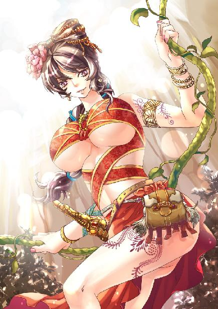
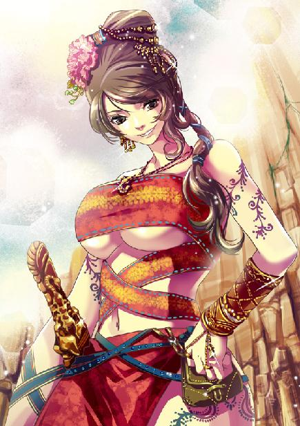
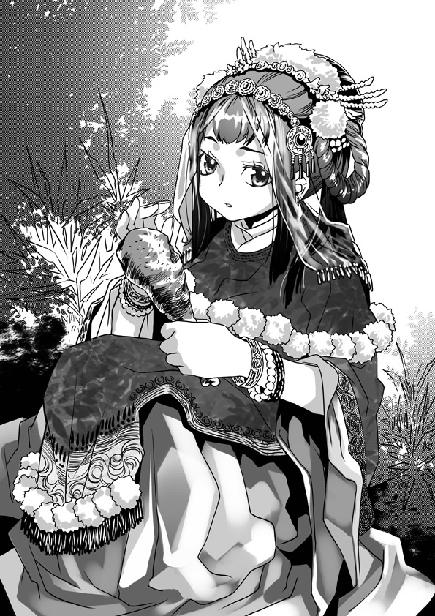
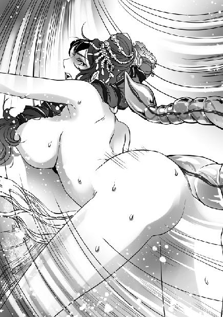

第5集·真假新娘
南荒篇（2/9）
出版日期：2009-12-11
【本集内容简介】
南荒女子柔媚可喜、热情奔放，但南荒的气候却更胜毒蛇猛兽，想在南荒活下去，就得比天候更狠更毒。一针立死的鬼面蜂、借腹产卵的阴蛛，这美丽又狠毒的丛林一点一点地吞噬着程宗扬一行人……
好不容易来到熊耳铺，云氏商会安排下的向导竟都是一些莫名其妙的货色，左闪秦桧右躲吴三桂，最后拣来一个朱八八。朱八八这胡吹大气的糟老头，真能安稳带领众人抵达白夷族吗？
※ ※ ※ ※ ※

封面人物：阿依苏荔

彩插：阿依苏荔

插图：乐明珠

插图：阿依苏荔
木制的简陋滑轮“咯吱咯吱”地转动着，商队的护卫和花苗汉子一起动手，将马匹和货物一一吊到崖顶。那些花苗汉子个子虽然不高，但身手矫健，比起易彪、吴战威他们也不落下风。
当凝羽最后挽着长索登上猩猩崖，时间刚过去半个时辰。花苗汉子热情地去拉，却被凝羽闪身避开。
祁远躺在地上，半晌才喘过气来。程宗扬递了壶水过去，祁远吃力地喝了几口，用手背抹着下巴的水珠，龇牙一乐，“常年走南荒，身子骨都让这儿的瘴气毁了。放在十年前，这点路我祁四上下两个来回也不带喘的。”
程宗扬笑道：“都说南荒的瘴气有毒，瘴气究竟是什么东西？”
“南荒湿气大，气候又闷热，林子里的树木花草、鸟羽兽骨什么的，被热汽蒸腾，就生出一层雾气，远远看着就跟林子里的云彩一样，颜色也好看，红的、黄的、蓝的，什么颜色都有。三月有桃花瘴，六月有黄梅瘴、蛇瘴。中了瘴气，轻的上吐下泄，几天动不了身，重的就没治了。”
说着祁远指了指那些花苗女子，悄悄道：“你别看南荒的女子生得水灵，可老得也快，都是瘴气害的。”
浓密的树荫下，穿着鹅黄筒裙的少女阿夕正被族长苏荔责骂，她嘟着嘴，不服气地垂着头。年长的阿葭被阿夕戏弄，也气得不去理她。其他的花苗女子在旁边笑吟吟看着，她们就像初绽的花朵，即使有的还生着气，也有着桃李般的娇艳。
望着那些明丽的少女，正在喝水的祁远微微有些失神，水流到脖子边也没有发觉。
程宗扬举起手，在祁远眼前晃了晃，“喂，老祁。”
“唔。”祁远醒过来神，又恢复了他的行商本色，“嘿嘿”笑了一声，然后打点起精神道：“她们帮了咱们这么大的忙，又正好赶上人家送亲。程头儿，咱们也该打点一份礼物送过去。花苗人重情分，有了交情什么事都好办。”
“行。你挑几样，咱们送过去。”
祁远有些为难，“可咱们带的货不大合适。”
白湖商馆带的那些药材、盐巴、布匹、铁器，用来当贺礼确实不恰当。程宗扬琢磨了一下，笑道：“这个好办。云老哥那里带的丝绸，正是现成的贺礼。我跟他商量一下，挑几匹好的，一起送去，算咱们两家一家一半。”
祁远笑逐颜开，“行！”
云苍峰刚上来不久，祁远过去说了几句，云苍峰疲惫的脸上立刻露出笑容，吩咐手下打开货物。众人挑出几匹用油布包好的丝绸，由程宗扬捧着，和云苍峰一同朝花苗人走去。
苏荔教训了阿夕一番，见云苍峰过来，知道他是商队里有身份的，主动与两人见礼。云苍峰说明来意，然后笑呵呵道：“正好遇上族里的喜事，这些薄物也算是我们一点心意。”
云氏商会准备周全，那些丝绸都用油布包着，一路上还跟新的一样。程宗扬打开油布，一抹鲜艳的金黄色流溢出来。
这是上好的柘州绸，金灿灿的绸面上绣着鲜艳的交枝玫瑰，色彩华丽异常，幽暗的光线下，火红的玫瑰仿佛在金色的丝绸上浮动着，闪闪发亮。
苏荔露出惊喜的表情，“好漂亮……”她忍不住摸了摸，那丝绸像温柔的水纹一样，柔滑得令人不忍释手。
“这样贵重的礼物，让花苗人感受到客人的情谊。”苏荔大方地收下礼物，向两人道：“无论云氏商会和白湖商馆什么时候来到花苗，都是我们花苗人最尊贵的客人。”
那些花苗女子围着丝绸叽叽喳喳说个不停，阿夕立刻把刚才挨骂的事忘到脑后，和那些女子一样高兴得脸颊发红。只有那名戴着面纱的少女没有过去，她微微垂着头，脸上洁白的面纱纹丝未动，仿佛一幅静止的图画。
看着众人疑惑的眼神，苏荔道：“她是龙神的新娘。神圣的巫王命令我们把新娘送到熊耳铺，交给他的使者，使者会把她带到龙神的宫殿。”
程宗扬道：“巫王？鬼王峒的鬼巫王吗？”
苏荔略显无奈地点了点头。
程宗扬与云苍峰交换了一个眼神。鬼巫王的使者在熊耳铺，不知道他们是否就是蛇彝村血案的凶手。
云苍峰咳了一声，“鬼王峒的人也到了花苗？”
经过交谈，众人才知道，原来鬼王峒的势力早已越过盘江，在两个月前延伸到花苗人的领地。面对鬼王峒的强势，刚刚成为花苗族长的阿依苏荔最终选择了屈服，与南荒大多数部族一样沦为鬼王峒的附庸。
鬼王峒每年都会向所有的附庸部族索取各种贡物——其中包括三名最美貌的少女。一位作为龙神的新娘，另外两位将献给巫王，供他享用。
鬼王峒的巫王在南荒有种种传说，有人说他有三颗头颅，分别受到天神、地祇和龙神的庇佑；有人说他戴着骷髅制成的面具，盘踞在黑铁制成的王座上，而龙神就隐藏在他的座位之下；还有人传说巫王身边服侍的奴仆，都是他亲手制成的鬼奴……流传最广的一种说法，则说鬼巫王每天都要与一名美貌处女交欢，然后把她当成食物。
鬼王峒的信使告诉花苗人，巫王的使者将在熊耳铺停留一段时间，要求她们把贡物尽快送去。
经过一番激烈的争吵之后，花苗人还是选出了自己的贡物。族中最美貌的少女被选为龙神的新娘，按照龙神娶亲的风俗，她将戴上面纱，不再让凡人见到她的面容。阿葭和阿夕则是奉献给巫王的礼物。
阿葭对将来的命运忧心忡忡，年幼的阿夕却仍是一派天真烂漫，一路上不时搞一些小小的恶作剧，没有片刻安宁。
被苏荔呵斥后，阿夕只安分了一会儿，又溜过去摆弄那架滑轮，还拉着易彪问东问西。她手臂和小腿赤裸着，露出大片雪白的肌肤，举止又随意得很，几乎把半边身子都挨在易彪身上。
易彪出身军旅，哪里见过这种阵势，窘得眼睛都不知道往哪儿放，脸红得和煮熟的大虾一样，让吴战威后来好一阵笑话。
休息过后，众人再次上路。此刻还是白昼，但林中幽暗得如同深夜。吴战威想点起火把，却被花苗人制止了。
“太多的火光会惊动森林之神。”卡瓦说道：“跟着我们的脚印走吧，只要花苗人的脚印还在，就不会让朋友迷路。”
卡瓦举着一支火把走在最前面，那些精悍的花苗汉子分成两列，把新娘一行护在中间。商队隔着十几步的距离跟在后面，只有武二郎厚着脸皮地与花苗人混在一处，用他们听不懂的蛮语跟苏荔说笑。
谢艺牵着马，不经意地上前几步，与程宗扬、云苍峰并肩而行。
“传说南荒有一种花，平常花苞合拢，附近有歌声和铃声就会盛开。”云苍峰闲聊道：“可惜没有多少人见过。曾经有人采到一株，想运到内陆贩卖，但刚过了白龙江口就枯死了。”
“玉盏铃花。”谢艺淡淡笑道：“我在一本书上见过。还有一种歌旋草，歌声响起的时候就会随声舞动。”
云苍峰拈着须频频点头，“谢兄弟真是见闻广博。当日那人贩运时一路都好端端的，可一过了白龙江口，花叶就尽数枯萎，不知是什么缘故？”
谢艺想了一会儿，“也许，这玉盏铃花、歌旋草和南荒的人一样，根都在南荒，一旦离开南荒的水土就都枯萎了。”
程宗扬却对谢艺的刀术很感兴趣，“谢兄的刀法一定很好吧？”
谢艺微笑道：“勉强防身罢了。”
“有没有兴趣教我两手？”程宗扬道：“我用白武族第一绝学——五虎断门刀跟你换！”
谢艺笑道：“五虎断门刀刚猛勇烈，程兄弟练成这套刀法自保有余。谢某刀法平常，多学无益。”
程宗扬看了他半晌，忽然一笑，“你就别骗我了。如果你的刀法真像你说的那样平常，听到我用五虎断门刀跟你换还不乐意？”
谢艺笑道：“剑为百兵之祖，刀为百兵之王。天下刀法何止千种？五虎断门刀乃刀中绝学，比谢某所学强上千倍。只是谢某的刀法与五虎断门刀修炼有异，不能勉强。”
程宗扬道：“不都是一把刀吗？有什么差异的？”
谢艺微微一笑，从鞍侧拔出一柄寻常钢刀，没有任何花式地递出，劈开一根树枝，招术平常之极。
如果一名樵夫看到，一定会把谢艺引为知己。他这一刀就如同一名砍柴多年的樵夫，钢刀下劈的重心正落在枝上，利用刀体的重量，力道半分不多、半分不少，正好将树枝砍断。角度、落点、力道无不准确之极。
但落在程宗扬眼里，算是俏媚眼做给瞎子看了。他这会儿什么都看不出来，只本能地觉得他的来历并不简单。
谢艺微微有些失望地收起刀，忽然又精神一振，“程兄如果想学刀法，我倒认识一位使刀的行家。等从南荒回去，我与程兄一同去拜访如何？”
“那好。”程宗扬一口答应。
祁远赶上来道：“程头儿、云执事，在藤桥耽误了一个多时辰，今晚怕是赶不到熊耳铺了。”
云苍峰道：“大伙都累了几天，也不赶这一时。今晚就在林子里歇宿了，明天一早再赶路。”
身后一声异响，队伍中一头正在行进的走骡忽然向前一倾，前腿跪倒在地。
它口鼻中淌出白色的泡沫，脖颈痉挛着扭了几下，便不再动作。
易彪俯身看了看，“是累得脱力了吧？”
祁远急道：“小心毒虫！”
旁边的吴战威抽出长刀，“啪”的一声，用刀背拍在骡背上。
吴战威慢慢抬起刀，脸色顿时变了。
刀下是一只朱红色的昆虫，它额上生着两只触角，腰身极细，背后有一大一小两对透明的翅翼，翼上暗红的花纹犹如骷髅。在它硕大的尾部末端，一根尖刺深深刺入骡背。
“鬼面蜂！”祁远叫道。
话音未落，一阵不祥的“嗡嗡”声从森林深处响起，仿佛有无数毒蜂正朝这边蜂拥而至。云氏商会的护卫们抽出兵刃，戒备地盯着森林。走在前面的花苗人也停下脚步，扭头朝这边看来。
“把刀收起来！”
护卫们扭头盯着祁远。祁远顾不上解释，抽刀砍开马背上一口竹篓，十余根捆扎好的火把滚落出来。
蜂呜声越来越近，祁远将火把分散扔给众人，叫道：“点着！用烟熏！”
满脸落腮胡子的易虎扬手一摆，手下的云氏商会护卫们立刻收起兵刃，捡起用蒲棒和艾蒿捆成的火把，引火点着。
幸亏祁远见机快，第一根火把刚刚点燃，几只朱红色的毒蜂便从林中飞出。
那些毒蜂比寻常蜜蜂体型大了数倍，额上生着诡异的复眼，蜂腰细而弯曲，直飞时尾部还向前挺出，露出弯钩状的蜂刺，钩尖滴血般殷红。
蒲棒束成的火把一经点燃就生出滚滚浓烟。小魏挥舞着火把驱赶毒蜂，众人连忙将马匹和走骡收拢起来。
几只鬼面蜂被浓烟一熏，四散飞开，在空中绕着飞出复杂的图形。更多的毒蜂陆续从幽暗的林中飞出，宛如朱红色的流星疾射出来。在它们身后，无数毒蜂聚集成一片暗红色的潮水，嗡嗡作响地从森林深处漫出。
所有人都变了脸色，这片蜂潮数量不下万计，两支商队三十余人，四十余匹骡马，仅靠十几根蒲棒艾蒿结成的火把，无论如何也抵挡不住。即使武二郎那样的身手，也未必能挡住这上万只毒蜂无孔不入的攻击。
那些鬼面蜂似乎十分畏惧蒲棒燃烧的浓烟，它们在弥漫的烟雾外越聚越多，无数复眼同时闪动着妖异的红光，挑起的尾针仿佛无数噬血的尖钩。
忽然一只毒蜂绕过浓烟，疾射在一名护卫颈中。那护卫伸手想拍，手刚举起一半就僵住了，他张开口，却没有发生一丝声音，双目圆睁着合身扑倒在地，当场气绝。
接着又有几只毒蜂绕过浓烟，蜇倒几匹骡马。那些鬼面蜂毒性惊人，即使云氏商会护卫们带来的军中健马也无法抵抗毒蜂一蜇，蜂尾血红的尖钩刺入体内，便即毙命。那些骡马陆续发出短促的嘶呜，栽倒在地。其余的马匹嗅到危险的气息，都不安地竖起耳朵。
鬼面蜂剧毒如斯，足以令任何人不寒而栗。程宗扬也拿到一根蒲棒火把，还没有来得及点燃，就被旁边一只手掌坚定地拿了过去。
“这样不是办法。”谢艺点着火把，“用烟熏，鬼面蜂只会越来越多。必须找到它们的蜂巢，把蜂后移走。”
见到商队被毒蜂袭击，花苗人也折返过来。他们表情慎重地低声商议着，最后苏荔说了几句什么，那些花苗汉子一起高唱起来。他们一边唱一边用短刀拍打着胸膛，做出劈砍跳跃的动作。
苏荔走过来，说道：“森林之神的愤怒，要用祭祀神灵的舞蹈平息。”
苏荔裸露的肌肤没有丝毫遮掩，任何一只毒蜂落在身上，都可能夺走她的生命，但苏荔毫不畏惧，她拔出弯刀，就那样走进蜂群。
硕大而血红的毒蜂飞舞着，翼上的鬼面骷髅花纹不住振颤，传来令人心悸的“嗡嗡”声。当陌生人踏入它们的领地，那些鬼面蜂都狂怒起来。
苏荔火红的褶裙摇曳着，刺着花枝纹身的雪白长腿在裙中时隐时现。她一边挥舞着弯刀，一边发出奇异的吟唱声，光洁的小腿摆动着，赤裸的脚掌轻轻打着节拍。那些鬼面蜂被她吸引，纷纷飞来，绕着苏荔的身体飞舞。
毒蜂越来越密，就如同一层红色的烟雾，将苏荔颀长的身影裹在其中。不时有毒蜂撞在弯刀上，发出金石撞击的声音，但没有一只去碰触苏荔的衣裙和赤裸的肌肤。
武二郎从货物中扯出一张牛皮，撕开裹住头脸和裸露的手脚。程宗扬一把拽住他，“你想死啊！”
武二郎哼了一声，抢过一支火把就准备闯入蜂群。
“蹲下！”程宗扬咬着牙低声喝道：“要是会花苗人的祭舞，你就去。要是不会，你就给我老实蹲着！”
蜂群中，苏荔洁白的手掌扬起，朝身后摇了摇，示意他们不要乱动。武二郎泄了气，一面抖开牛皮，把一只落单的鬼面蜂拍得稀烂。
花苗汉子的歌喉猛然高亢起来。蜂群中传来一阵异样的波动，“嗡嗡”声变得更加激越，仿佛被激怒一般。
苏荔曼声吟唱着古老的祭歌，缓步踏入森林，那些鬼面蜂也随之飞去。剩下几只漏网的，不是被浓烟驱散，就是被武二郎等人拍死。
那些花苗汉子持刀边舞边行，用歌声呼应着蜂群的“嗡嗡”声。商队面临的危机暂时解除，程宗扬立刻要了两支火把，一手拿着，拔腿跟了过去，谢艺不作声地跟在后面。接着吴战威、小魏、石刚也追了过来。他们一半是好奇，一半也是担心花苗女族长的安全。
林中光线极暗，那支牛油火把的光芒只照出丈许，就被黑暗吞没。程宗扬六识的灵觉比以往敏锐了许多，也只能看到那团由毒蜂构成的红云，和蜂影中修长的身影。
一个高大的身影从程宗扬身边抢过，武二郎猛虎般的身形出人意料的敏捷，从密林中穿过，几乎没有发出丝毫声音。
忽然武二郎停下脚步，昂起头颅。程宗扬举起火把，只见头顶丈许的高处，悬着一团巨大的阴影。
那是一颗巨大的蜂巢，高度超过一丈，庞大的体积将它所依附的松树都扯得弯折下来，仿佛一盏巨大的灯笼。蜡质的蜂巢表面附着无数朱红色的鬼面蜂。它们密密麻麻地在蜂巢间钻进钻出，不时有拖着毒钩的鬼面蜂振翅飞起，加入到苏荔身边盘旋的蜂群中。
苏荔轻轻拍着弯刀，边歌边舞。她舞姿轻柔而优美，鲜艳的红裙在蜂影中飘扬舞动，白皙的大腿上，那圈青黑色的纹身隐隐发出亮光。但程宗扬清楚看出她额头的汗珠，这颗蜂巢体积超乎想象的庞大，她的祭歌也未必能安抚这些愤怒的鬼面蜂。
蜂群越聚越多，将苏荔的身影完全笼罩住。忽然，一个身影箭矢般射出，谢艺挥起钢刀，一刀劈入蜂巢，他这一刀劈得极深，几乎连肩膀也陷入其中。
在众人惊骇的目光中，谢艺毫不停顿地探身钻入蜂巢，接着又闪身退出。他头上衣上沾满金黄的蜂蜡与蜜汁，钢刀咬在口中，两手高高举起，手中托着一只巨大的鬼面蜂。
那只鬼面蜂体型比苏荔身边的毒蜂大了数倍，腹部极长，尾端的蜇针就像一支血红的尖钩，在谢艺手上微微蠕动。它翅膀极短，仅能覆盖腹部的一半，已经失去了飞行的能力，但翅上鬼面骷髅的图案却浓重无比。
谢艺一手抓住蜂后的翅根，一手抓住蜂腰，那支血红的蜂钩虽然不住前挺，谢艺的手掌却稳若磐石。
谢艺咬着钢刀的脸上仍带着那种从容而浅淡的笑容，甚至还伸出舌尖，舔舐刀背淌下的蜜汁。
飞舞的蜂群猛然一滞，接着朝谢艺飞去。谢艺静静品尝着蜜汁的甜美，然后肩膀一耸，倒退着掠上巢顶的横枝，接着飞身掠往林中。
鬼面蜂硕大的复眼射出鲜亮的红色，潮水般从众人身边飞过，发出激烈的“嗡嗡”声。包括武二郎在内，所有人都屏住气，一动也不敢动。好在那些毒蜂对他们毫不理会，紧贴着他们的身体疾飞掠过，连蜂巢内的鬼面蜂在内，不多时就走得一个不剩。
苏荔呼了口气，面孔微微发白，她身上的红裙已经被汗水湿透，如果不是谢艺突然出手掠走蜂后，她此时已经力竭，再无法维持祭祀的歌舞。
武二郎虎吼一声，五指如钩挥到苏荔颈后，抓住一只偷袭的鬼面蜂，拧断了它的毒针。苏荔盘起的长发也被汗水湿透，髻侧那朵红花微微坠向一边。她朝武二郎嫣然一笑，“谢谢。”
武二郎情不自禁地伸出手，扶了扶她髻侧那朵红花，然后才意识到自己的唐突，讪讪道：“歪了……”
苏荔火辣辣的凤目朝武二郎眨了眨，然后笑吟吟唱道：“上去高山望平川，川上一朵红牡丹……”一边唱一边轻盈地走了过去。
程宗扬低声道：“二爷，是你心歪了吧？”
武二郎张了张嘴，忽然一拳打在树上，震得那颗裂开的蜂巢一阵摇晃。
“武二？”
“我忘词了。”
※ ※ ※ ※ ※
花苗汉子们收集了干柴，掘好火塘。在感谢和祈求森林之神的庇佑之后，苏荔亲手点燃了篝火。
花苗人本来要趁夜赶到熊耳铺，在得知商队准备宿营之后，他们慷慨地同意与这些远道而来的朋友一同留在危险的森林中。
随着篝火的升腾，众人的情绪也随之高涨。从蜂巢取出的蜜汁足足装了二十口坛子，每一滴都如同金黄的琥珀。而坛中原来盛的美酒，则给那些花苗汉子带来更大的惊喜。
按照花苗的习俗，他们先祭祀了神灵，然后把酒坛放在中间，众人围着篝火坐成一圈，用一支长柄勺轮流饮酒。
“花苗人不会酿酒，平常是用金砂换酒来祭祀神明。”祁远嘿嘿一笑，“现在有酒，说不定花苗人一会儿还会跳起祭神的万舞。”
祁远的笑容中包含着兴奋和期待，一丝感慨，还有隐约的怀念。
正说着，一名喝红脸的花苗汉子跳进圈子里，他一边高声唱着，一边摇晃着肩膀伸出手来。
那些花苗女子挤坐在一处，她们笑着将一名同伴推揉出来。那女子脸色微微发红，眼睛却亮得如同夜空中的寒星。她展开歌喉，与那男子一唱一答，然后把手交给对方。
接着站出来的是卡瓦，和其他花苗汉子一样，他身材虽然不太高，但手长脚大，举止剽悍，他一边歌唱，一边直接把手伸给一名脸蛋圆圆的花苗女子。女伴的笑闹声中，那女子大方地站起来，拉住卡瓦的大手，与他并肩站在一处。
越来越多的男子站出来，邀请自己心仪的女伴。他们手拉着手，男女混杂地围成一个圈子，围着篝火起舞。花苗人的舞蹈和歌声一样奔放而热情，浑厚的男音与清悦的女音此起彼落，又完美地交织在一处。伴着歌声，他们像一圈五彩的花环，时而聚拢，时而散开。
那些娇美的花苗女子穿着窄窄的筒裙，一个个皮肤白嫩，眉目如画。她们纤细的脚踝大多都戴着碎碎的银铃，在篝火的光影中，那些女子雪白的小腿和纤足赤裸着，随着歌声的节奏轻柔而欢快地跳动起落，脚踝上的银铃发出清脆悦耳的铃声，别有一番美艳的风情。
商队众人分成两个阵营，程宗扬等人聚在前面，一边看一边鼓掌叫好，连云苍峰也面露微笑。云氏商会那些年轻的汉子们却腰杆挺得笔直，坐得端端正正，显示出军旅出身的严格纪律。
这时程宗扬已经看出来了，这些北府军士卒的头领是那个叫易虎的汉子。他身形魁梧，背后一杆尖枪从不离身。下午死在鬼面蜂毒钩下的那名汉子，就是他的手下。这一路双方相伴而行，能看出这些军士们同袍之间手足情深，但当鬼面蜂被引走之后，易虎只冷静地吩咐军士们收殓了同袍的尸体，脸上没有丝毫表情。
看那些军士的样子，没有易虎发话，他们就是坐到天亮也不会动一下。
花苗人的队伍女多男少，苏荔是族长，戴着面纱的少女和阿葭、阿夕要奉献给龙神和巫王，剩下的还有三四名女子没有舞伴。她们明亮的眼睛不时望向这些陌生的客人，火热的目光令人怦然心动。
祁远忽然站起来，操着南荒蛮语唱道：“翻过高不见顶的青山，涉过深不见底的河流，从五原走来的商人，冒昧地伸出手。比月亮更美丽的花苗姑娘们啊，谁愿意与我一起起舞，让神灵欢喜。”
他略显生疏的歌声使剩下的花苗女子笑成一团，然后一名身材纤细的女子起身唱道：“歌声飘到了我面前。远方来的朋友，你跋山涉水，走过弯弯曲曲的山路，来到南荒就是我们的客人。”
唱着唱着，那女子接过祁远的手，祁远扭头朝程宗扬眨眨眼，融入跳舞的人群。
“祁老四还有这一手？”
程宗扬看着场中。其貌不扬的祁远就像换了个人，跳起花苗人的舞蹈也似模似样，与那些花苗汉子相比毫不逊色。
吴战威笑得眼都眯成一条细缝，“老祁当年可风流着呢，还跟一个花苗女子好上了，后来……”吴战威咂了咂嘴，没有再说。
程宗扬心里一动，想起祁远讲的故事，“不会是他把人家甩了吧？”
吴战威摇了摇头，“你别看老祁圆滑，其实是个重情义的汉子。那次的事……”
“唉，临走时那女的追出几十里，一边追一边哭，老祁在车里也哭，眼泪淌得跟泪人似的。后来他又来南荒，结果中了瘴气，差点没命，还拼着去花苗找人。”
“从南荒回来，他大病一场，躺了半年才能起身。你别看老祁现在爬个山都喘，当年身手比我都强，就是那次垮了下来。”
“找到了吗？”
“没有。听说是嫁人了，老祁也就死了心。往后只要走南荒，老四都是头一个，只是不去花苗。”
程宗扬摸了摸鼻子，再去看祁远那张青黄的面孔，似乎顺眼多了。
有祁远带头，几个胆大的年轻护卫也蠢蠢欲动，程宗扬干脆一挥手，“想去就去，只要别给我丢脸。”
石刚讪笑着蹿出去，找了他最中意的一个姑娘，那花苗女子却把手递给了更英俊的小魏。石刚碰了一鼻子灰，正要打退堂鼓，另一名女子却笑盈盈起身，拉住了他的手。石刚顿时心花怒放，一张脸笑得见牙不见眼。
程宗扬拍了拍吴战威的肩，“吴大刀，你不去？”
吴战威头摇得什么似的，“老吴耍刀行，这个不行。那姑娘们的光脚丫又白又嫩，老吴一不小心踩上就完了。”
说着他左右看了看，压低声音道：“凝侍卫长不在这儿，你怎么不去？”
上了山崖之后，凝羽一直没有现身，程宗扬已经习惯了她的突然消失，也不在意，回笑道：“我等着看二爷的乐子呢。”
那边武二郎抿了抿浓密的鬃发，起身像头出林的猛虎般大步走了过去。
“上去高山望平川，川上一朵红牡丹。”武二郎高声唱道：“看起来容易摘起来难，摘不到手里是枉然。阿妹的红牡丹呀，摘不到手里是枉然。”
程宗扬一口酒全喷了出来，武二这歌词也太赤裸裸了吧。如果自己在街上对一名陌生女子唱着要摘她的红牡丹，最便宜也要吃一个耳光。
苏荔脸也微微有些发红，好在武二郎这段词用的并不是南荒蛮语，族里人未必能够听懂。她背着手，微微抬起下巴，唱道：“白武族的勇者呀，如果你会祭神的万舞，就把你的手伸出来。”
武二郎喜上眉梢，毫不犹豫地伸出大手，“如果我撒谎，就让鬼面蜂的毒钩扎遍全身！”
苏荔笑啐一口，把洁白的手掌递给他。武二郎轻轻一扯，苏荔盈盈起身。
花苗人正跳得开心，两人一踏入圈子，那些花苗男女立即聚拢过来，把两人围在中央。男人们发出“喔喔”的叫声，脚板用力踏地，打出节拍，花苗女子舌尖在齿间轻颤着，欢快地唱着“阿哩哩”，简单的音节从她们纯银般的歌喉流淌出来，有着天籁般的纯美。
程宗扬靠在树上道：“云老哥，万舞是什么舞？”
“花苗人祭天、祈神、出征、求雨都用万舞。”云苍峰说道：“大概种类太多，才叫万舞。花苗以外的地方很少能见到。”
程宗扬看向另外一边，“谢兄？”
谢艺身上的蜂蜡和蜂蜜已经抹去，但仍散发着淡淡的甜香。他温和的笑容充满了成熟男子的魅力，令人想起温润如玉的谦谦君子。
没有人知道他是怎么从鬼面蜂的追逐下脱身的，谢艺对当时的经历只笑而不语。唯一可以确定的是，那些鬼面蜂再也没有出现过。因为某一个原因，它们甚至放弃了原来的蜂巢，消失在密林深处。
“王子朝的《百舞图录》考据过万舞的源流。”谢艺娓娓言道：“著者称，万舞是花苗的祖舞。花苗本来被称为花蝎，而万字就是蝎字。”
说着谢艺在地上写了一个“萬”字，一边划一边解释道：“万字前有双钳，背腹覆甲分节，尾部还有一个弯曲的蝎钩。”
云苍峰看着那个苍劲古朴的万字，良久才抚掌叹道：“这万字老夫写过无数次，从来都没发现它是蝎子的图案。现在看来，果然首尾俱全，形神皆备。”
“这么说，万舞就是蝎舞了？”
“也许吧。”谢艺微微笑着说道：“王子朝从未到过南荒，只是一家之言，未必就是实情。”
场中的万舞愈来愈激越高亢，花苗男子们做出种种战斗的动作，已经喝醉的卡瓦高声欢呼，两手飞快拍打着自己古铜色的肩膀和结实的胸膛。那些花苗女子白皙的脸颊浮现出两片红云，她们扬起手臂，赤裸的小腿伴随着歌舞的节奏来回摇摆甩动，两足白如霜雪。
祁远与那些地地道道的花苗汉子一样拍肩击胸，高呼欢舞，青黄的面孔浮现出亢奋的血色，仿佛花苗人的灵魂已经融入他的血脉。
花苗人身材普遍不高，族长苏荔高挑的身材完全是一个异数。她一米九的身高，也只有武二郎的凛凛雄躯才能配得上。两人一个高大魁梧、龙精虎猛，一个修长丰挺、貌美如花，毫无疑问地成为人群中最引人注目的焦点。
万舞的舞姿热烈而奔放，充满撼动人心的力量。熊熊燃烧的篝火间，苏荔雪肤花貌，衣红似火，她双颊微红，美目中散发出逼人的艳光。
忽然，高亢的歌声低缓下来，聚在一起的花苗男女手挽手向后散开，变成一个圆环，篝火旁只剩下武二郎和苏荔这一对男女。
苏荔两手贴在腰侧，凤目妖娆地看着武二郎。她缓缓抬膝，那条光洁的美腿从裙间探出，轻盈地迈出步子。武二郎脸上金黄的虎斑微微鼓起，他昂起头，发出“喔”的一声龙吟虎啸般的长啸。
苏荔手臂扬起，洁白的裸足点在地上，围着篝火旋转起来。旁边的花苗男女不再唱歌，而是有节奏地拍打着肩膀，每个人脸上都流露出喜悦和兴奋的表情。
苏荔的舞姿繁复异常，散开的红裙仿佛一朵盛开的牡丹。她旋着身，像飞舞的鲜花般绕过燃烧的篝火，离武二郎越来越近。
当武二郎啸声停止，苏荔同时舞到他身旁，绕着他的虎躯飞快地旋转着。她丰满的双乳不停耸动，颀长而柔软的身体仿佛是一株摇曳生姿的藤蔓，攀附在武二郎高大如同参天巨树的身形上。
武二郎筋骨如铁，宽阔的胸膛不住起伏。忽然他手臂一抬，揽住苏荔纤细的腰身。苏荔飞旋的红裙散落下来，整个身子依在他宽大的手掌上。接着白滑的腰身向后弯去，那条白美的玉腿扬起，将秀美的玉足搭在武二郎肩上。
两人四目交投，武二郎金色的虎斑冒出汗珠，他揽住苏荔的腰臀，肩膀扛着她一条扬起的美腿，然后上身后仰，腰腹向前挺出，以一个雄武的姿势在她腿间的部位挺动着。
程宗扬瞪大眼睛，这哪里是舞蹈，完全是在模拟性交动作。
谢艺淡淡笑着说道：“前人在书中曾经记载过，万舞的高潮是男女起舞，模仿蝎群交配的场景。谢某有幸目睹，与书中记载相互印证。古人诚不我欺也。”
云苍峰看到程宗扬的惊讶，也笑着解释道：“南荒人认为男女之事能使得土地肥沃，部族繁衍。有些南荒部族会在春耕时，选出部族最美貌的男女，在待耕的土地上交合，来祈佑丰收。”
说话间苏荔已经在篝火旁躺下，两腿弯曲着张开。武二郎雄壮的身体伏在她身上，腰腹隔着红裙在她两腿之间起伏。这时周围的花苗男女们也双双纠缠在一起，和苏荔一样，她们仅仅是做出种种诱人的动作，彼此的身体并没有直接贴在一起。
篝火的热度仿佛越来越高，每个人额头都淌出闪亮的汗水。那些北府军的士兵正襟危坐，一个个脸涨得通红。吴战威打趣地朝易彪比了个手势，呵呵而笑。易彪那张脸红得像紫茄子一样，腰背仍挺得笔直。
篝火另一边，只剩下三名花苗女子还留在原地。戴着面纱的新娘安静地坐在树下，半边身体都被阴影遮住。她两手放在身前，胸前鲜红的嫁衣紧绷着，微微起伏。阿葭粉颊微红，垂着头，一手拉着颈中红珊瑚磨制成的珠链。只有阿夕瞪着圆圆的大眼睛，眼睫一眨不眨地盯着场中淫靡的舞蹈，小嘴微微嘟起，表情既充满兴奋又有些不满。
阿夕视线从场中移开，那双灵巧的眸子游移着落在程宗扬身上。程宗扬戏谑地朝她眨眨眼，花苗少女吐出舌头，朝他做了个鬼脸，又示威般的挺了挺胸。
程宗扬指了指场中的苏荔，又指了指她的胸，然后竖起手指摇了摇。阿夕像气恼的小猫一样瞪了程宗扬一眼，她看了看四周，然后解开胸前的衣纽，露出一片白嫩的肌肤，骄傲地挺起。
火光下花苗少女的酥胸显露出饱满的曲线，肌肤白得刺眼。程宗扬没想到她这么大胆，只好认输，朝少女裸露出一半的雪乳挑起拇指。
阿夕得意地掩上衣襟，朝他皱了皱鼻子，接着眼珠一转，又悄悄去掀新娘的嫁衣。
一直娴静如画的新娘仍垂着头，那双交握的手掌轻轻一滑，拿住了阿夕的手腕。
阿夕眉头拧紧，露出吃痛的表情。新娘松开手，又在阿夕手背上狠狠拍了一掌。阿夕不敢作声，只幽怨地看了新娘一眼，不甘心地拨弄着脚踝的银铃，一边不时去看程宗扬。
程宗扬正看得有趣，谢艺忽然道：“程兄可有意算上一卦？”
“哦？”
谢艺不等他答话，便从袖间取出三枚铜铢，随手撒在地上。
“程兄好运道。”谢艺半是认真半是调侃地说道：“今夜子时，离此西南，百丈之外，程兄必有奇遇。”
“什么？”
“是真是假程兄届时便知，”谢艺从容收起铜铢，“此乃命中定数，违之不祥，还请程兄谨记。”
没等程宗扬明白过来，谢艺已经拱手一揖，起身施施然离开。
这时场中的万舞已经到了最高潮，苏荔以兽禽虫豕通行的交尾姿势伏在篝火前，武二郎单膝跪地，两手抱着她的腰肢，在她臀后大力挺动。周围的男女做出各种姿势，一对对交缠在一处，模仿着蝎群交配时纠缠翻滚的姿态。
他们不再歌唱，而将全部身心都融入这神圣的舞蹈中。虽然隔着衣物，但他们充满激情的露骨动作，却将男人的强壮和女人的柔顺与美艳表现得淋漓尽致，连程宗扬也禁不住心旌摇动。
对于花苗人来说，世上最大的神迹莫过于血脉的延续和种族的繁衍生息。男女交合，新生命的降生，一切都充满神秘而令人敬畏的力量。他们用万舞来祭祀这伟大的力量，祭祀使他们一代代繁衍的神明。
花苗的女族长裸露的肌肤布满亮晶晶的汗水，她红裙滑在一边，露出一侧丰满的雪臀，那条白滑的大腿完全暴露出来，白腻而又修长。一串汗珠从她大腿上缘的纹身淌过，在雪白的肌肤上留下湿淋淋的艳光。
苏荔发髻微微松开，一缕乌亮的发丝垂在脸侧。她微微偏着头，一双美目不时望向身后充满雄性气息的身影，一边弓着腰肢，竭力向后挺动雪臀，似乎正在与身后的男子做着激烈的交合，那张艳丽的玉脸上满是明媚的笑意。
※ ※ ※ ※ ※
终于，一切都安静下来。篝火渐渐熄灭，燃烧过的木柴在火塘中闪动着暗红的光芒。
宿营的商队撑起帐篷。白湖商馆用的是普通布帐，鬼面蜂的袭击使他们失去了一匹马和两匹走骡，所幸没有折损人手。护卫和奴隶们三三两两住在一处，虽然简陋，还能够容身。
云氏商会除了云苍峰用一顶油布制成的小帐，军士们用的都是牛皮帐篷。那些皮帐庞大沉重，但制作精良、工艺考究，每顶帐篷能住八人，只用两顶就足够所有人住下，算起来比商馆的还轻便一些。
花苗人更简单，他们砍来几片巨大的芭蕉叶，给新娘搭了一顶帐篷，留了两名汉子守护，其他人便散入树林中。不出所料，那些花苗人都是一男一女相携离开。让程宗扬惊奇的是，小魏竟然也跟刚才同舞的花苗女子一起钻进林子，却没有一个花苗人露出异样的表情。
“南荒跟六朝不一样。花苗人的风俗是女子满十五岁，家里就用石头给她垒一间屋子，让女儿自己住，有相好的就可以留宿。”祁远抿了口酒，龇牙咧嘴地说道：“等嫁了人，花苗女人就贞洁起来，不管以前有多少相好的，成了亲就只认丈夫一个。”
“六朝人认为南荒的风俗不好，说是淫乱。我瞧着花苗人这风俗倒比六朝好些。六朝人讲究媒妁之言，父母之命，一男一女没见过面就硬撮合成一家。运气好的倒也罢了，遇上不合适的，免不了吃一辈子的苦。哪像花苗这样，过得顺心自在。”
“别人说花苗人性淫，不知道礼法，是禽兽之行。可花苗人女不为娼、男不为盗，成了亲的男女守在一处，你好我好。比起那些偷汉子、养小老婆的，可强到天上去了。”
祁远笑着摇了摇手，“我是喝醉了乱说的，这些话你听过就算。”
程宗扬接过酒葫芦喝了一口，“我觉得你说的挺对。”
祁远沉默下来。
过了会儿，他嘶哑着嗓子，低声唱道：“一月桃花开满山，见不到妹妹心里面烦。半夜想起梦中见，醒来隔水又隔山……”
※ ※ ※ ※ ※
营地的声息在身后渐渐远去。程宗扬运足目力，在黑暗中辨识着方位。那些高大的松树显示出粗犷的轮廓，夜色像一层深灰的厚纱，笼罩其间。偶而有几只萤火虫飞过，尾端的萤光忽明忽灭，画出一道隐约的光弧。
这个世界的夜晚静谧非常。经历过前生都市里不夜的灯火，这样的夜晚总在提醒程宗扬自己异乡人的身份。
凝羽从西门庆那里得来的功法并不完整，但对于程宗扬来说已经足够。在凝羽的倾身传授下，他终于开始触摸到修炼的途径。自己就像一条小溪，缓慢地积蓄着力量——虽然在凝羽眼中，程宗扬身上仍然充满许多令人不解的谜团。
“修炼者根据修为的深浅和力量的强弱，大致可以分为九个等级。前三个等级——筑基、内视和生象，普通人经过修炼都可以达到。第五级的坐照，是强者的分界线。大多数修炼者终其一生，也无法进入第五级的境界。”
在凝羽的解说下，程宗扬了解到，在这个世界里，力量并不仅仅是武侠中的内力那样简单。无论羽族、人类还是其他种族，获得力量的方法都是修炼三真——真元、真阳与真气。三者相辅相承，又各成体系。简单来说，真元是元命与神识，真阳是活力与生机，而真气则是能够施展的力量。
真元、真阳与真气被称为修炼者的三宝。按道理来讲，只有真元稳固，真阳才能充盈；真阳充盈，真气才能充沛。但由于修炼者资质的不同，有些人更适于修炼真元，他们力量平平，元命与神识却异常强大，这些人往往由于擅长法术而被称为御法者。至于大多数人，修炼所显示的成效都在于力量与真气，他们多半长于格斗，成为这个世界的武者。三者之中，只有真阳最少有人修炼。它更像人体的血液，虽然必不可少，但拥有比常人多数倍的血液，远不如拥有强大的神识和力量那样实用。
凝羽的困惑就来自于此。程宗扬的真元略有根基，刚刚越过第一级筑基，进入第二级内视的水准；真气只能算是初学者，比商队那些护卫还略有不如；可是他的真阳却浓郁异常，远远超过了她所能理解的范畴。
面对凝羽的疑问，程宗扬也无法解释。也许这种异状来自于他那个莫名其妙的生死根，但程宗扬不明白为什么转化的不是真元或者真气，让他迅速成为一个伟大的法师或是武者，却偏偏是没有什么攻击力的真阳。
不过这些真阳也为程宗扬带来了一些意料之外的补偿。至少，自己没有死在蛇彝人的毒牙之下。只用了两天时间，喉部的伤口就平复如初。其他方面也有些意想不到的效果，比如长途跋涉之下，自己还有余力与凝羽肉搏一场，没有累得像条死狗。
密不透风的森林忽然露出一片空隙。也许是雷击引起火灾，方圆数里的巨树被烈火焚毁，只剩下残缺而乌黑的树干。没有枝叶的遮蔽，大片大片的藤蔓和灌木在空地间疯狂地滋长起来，那些仿佛不会凋谢的花朵在夜色下收拢，变成一个个巨大的花苞。水雾凝成的露珠悬在花尖，闪烁着点点星光。
大概就是这里了。程宗扬停下脚步，脑海中浮现出谢艺温和而又略带狡黠的笑容。
“今夜子时，离此西南百丈之外，程兄必有奇遇。”
程宗扬并不太在意奇遇，他好奇的是谢艺这个人。
一个孤独的行者，需要莫大的勇气才能走进这片蛮荒之野。那么他是为了什么理由？
谢艺是不是真的会算卦，程宗扬并不知道。但他相信谢艺绝不是一个信口开河的人。那么他说的奇遇又是什么呢？
程宗扬在一片宽大的蕨叶上躺下，饶有兴致地看着周围飞舞的萤火虫。这些萤火虫应该是真的，气息很平静。如果现在再出现凝羽用月光凝成的蝴蝶，自己也能分辨出来了吧。
远处的树干仿佛风化的石林，在夜色中无声地矗立着。身下的蕨叶不知道是什么植物，肥厚的叶片贴在地上，宛如绿色的丝绒，躺上去让程宗扬想起自己曾经买过的一条蚕丝被。
那个时候，躺在自己旁边的是紫玫……
程宗扬心里微微一酸，不由自主地摸了摸身侧的背包。
来到这个世界已经一个多月，随着自己越来越像一个六朝商人，自己与以前那个世界也仿佛越来越远。他常常害怕自己会忘掉了以前的世界，但想起来时，心里只有酸涩。那个世界在记忆中依然清晰，却像是隔了一层厚厚的玻璃，只能回味，无法触摸。
现在自己与那个世界的联系，只剩下这只干瘪的背包。情趣内衣、按摩棒、安全套、摇头丸……想起这些“神奇”的物品，程宗扬只能苦笑了。
林中传来窸窸窣窣的声音。接着，一道苗条的身影出现在夜色下。她双手抱着身体，惊惶地看着四周，小声唤道：“阿夕……阿夕……”
那是花苗队伍里两名伴娘之一的阿葭。令人惊奇的是，她身体是赤裸的，除了颈子那串红珊瑚珠串，她身上再没有任何衣物。她用双手掩住赤裸的乳房，长发湿淋淋贴在肩上，玉体曲线动人，白嫩的肌肤刚刚洗浴过，还有未干的水迹。
“阿夕……”她声音微微战栗着，带着一丝哭腔。
程宗扬屏住呼吸，同时睁大眼睛。这会儿显然不是助人为乐的好时候。如果这个时候站出去，对方会不会领情不说，其他花苗人闻讯赶来，说不定还会把自己当成淫贼。
花苗女子本来就美貌迷人，何况阿葭还是从族中精心挑选出来送给巫王的礼物。那少女俏生生立在没膝的蕨叶间，光洁的身体仿佛一尊玉像，白净细腻，曲线玲珑。她双手掩胸，赤裸的肩头莹洁可爱，白嫩的雪臀圆圆翘起，双腿白美圆润。在她平坦的小腹下，几缕乌亮的阴毛被水打湿，柔顺地贴在身下。
阿葭一边走一边左右张望，她腰肢纤细而柔软，走动时圆翘的裸臀随着腰肢的摇摆轻轻扭动，让程宗扬情不自禁地挺举起来。
花苗人是天蝎的后代，不会长着蝎子的尾钩吧？程宗扬悄悄抬起头。
阿葭惶然地四处张望，她转过身，姣好的背影显露出来。她的身体与人类少女并没有太多区别，臀后也没有可怖的蝎尾，只是臀部的尾椎微微突起，周围隐隐覆盖着一片薄薄的甲壳，就像一条银白色的丁字裤，从臀缘没入臀沟。
忽然，阿葭脚下绊住了什么东西，一跤跌倒，整个人都伏在碧绿的蕨叶中，只露出白腻的雪臀和肩背。阿葭像受了极大的惊吓一样，短促地惊叫一声，身子颤抖起来。
程宗扬立即跳起来冲了过去，“怎么了？”
阿葭双膝跪在地上，圆臀向上翘起，雪白的臀肉微微分开，少女娇美的秘境隐约绽露出来。听到程宗扬的声音，她不顾一切地转过身，双乳跳动着抱住程宗扬的双腿，把脸埋在他大腿上，浑身颤抖不已。
被这样一名赤裸的美少女紧紧抱住，感觉很香艳。但程宗扬来不及享受，就硬生生停住脚步。
阿葭绊倒的地方立着一棵烧残的松树，树下爬满半人高的蕨类植物。其中一些蕨叶明显被利刃砍过，断枝间露出一截雪白的小腿。
南荒危机四伏，程宗扬一直随身带着刀。他抽出弯刀，小心翼翼地挑开蕨叶。
蕨叶下，一双灰色的眸子正空洞地望着自己。一具赤裸的女尸肢体僵硬地跪在地上，背后靠着烧黑的树炭。她年龄很小，娇美的脸颊两侧各有一道细细的蛇鳞，似乎还不到十四岁，小腹却像临产的孕妇一样又圆又大，高高隆起，小腹白皙的肌肤被撑胀得变成薄薄一层，几乎透明。
程宗扬已经见过许多类似的尸体，一眼就认出她是蛇彝族的少女，而且很可能来自于他们路过的蛇彝村寨。因为在她圆滚滚的腹球上，用血迹绘着一幅鬼王峒的笑脸图案，血迹已经凝成紫黑的颜色。
蛇彝少女赤裸的胴体留着被利爪撕扯过的伤痕，伤口极深，却没有丝毫血迹。她下体更是被人残忍掏弄过，受伤的阴户大张着，股间沾满黄褐色的污迹。
这里距离蛇彝村有三四天的路程，一名受伤的少女根本不可能走这么远。很明显，那些凶手在村中大肆奸杀之后，又把这名蛇彝少女掳走，一路淫玩，然后把尸体丢弃在林间。
从尸体的血迹判断，蛇彝少女被遗弃在丛林里的时间，是在两天以前。想到那些凶手曾经在附近住过，程宗扬背后就一阵冷飕飕地发寒。
阿葭抱着他的腿，飞快地说着什么，可程宗扬一个字都听不懂。
程宗扬扶起阿葭颤抖的肩膀，“别怕。她已经死了。我们赶快回去。”
阿葭越说越急，一边说一边摇头。
程宗扬安慰道：“好了好了，我知道了。她已经死了，不要再害怕。我们赶快回去。”
阿葭用南荒蛮语咿咿哩哩说着。她像是被那具尸体吓呆一样，无论程宗扬怎么说，都不放手。
程宗扬着急起来，谢艺说的奇遇就是这倒霉事？还不如让那家伙自己来呢。
花苗少女光溜溜的身体搂着是不错，可旁边还有具尸体睁眼看着，那感觉也太诡异了！
程宗扬半拖半抱地搂着阿葭退了几步，直到那具尸体被蕨叶遮蔽，看不到她的视线，才道：“我们回去再说！”
阿葭还咿咿哩哩说着，一会儿点头，一会儿摇头。他们两个彼此听不懂对方的话，打手势也表达不出彼此的意思。程宗扬越听越是头大，“我听不懂，别再说了！”
阿葭急切地说着，已经急得哭了出来。
程宗扬也急得浑身出汗，早知道应该把祁远带来，好歹他能听懂这丫头在说什么。
程宗扬气急败坏地喝道：“闭嘴！”
阿葭仍然惶急地说着。
程宗扬一阵光火，抬手朝阿葭赤裸的屁股上打了一巴掌。
“啪”的一声脆响，花苗少女的声音立即中断。阿葭睁着圆圆的眼睛，有些错愕地望着程宗扬。
程宗扬也有些尴尬，讪讪地收回手。
让他难堪的是，这一巴掌打上去，自己竟然不合时宜地勃起了。说起来这花苗少女的屁股手感真不错，白生生又滑又嫩，像一颗光溜溜的皮球，充满弹性。
阿葭这才意识到自己还光着身子，有些慌乱地抱住双乳。她细白的牙齿咬住唇瓣，脸渐渐红了起来。
自己穿得整整齐齐，却让一个少女光着身子，未免太不恰当。意识到对方的尴尬，程宗扬急忙解开衣服，想替阿葭披上。
但他的动作却让阿葭误会了。阿葭脸颊时红时白，然后鼓足勇气，扬起脸唱歌似的向程宗扬说了几句。
如果她说英文，大家还可以交流一下。可这些南荒蛮语，程宗扬完全不知所云，只好摆出和蔼的笑容，频频点头。
阿葭脸色更加红艳，她水灵灵的妙目瞥了程宗扬一眼，然后两手抱着胸乳，羞赧地平躺下来，一边顺从地张开双腿。
正在解衣服的程宗扬像呆头鹅一样，看着花苗少女白嫩的双腿像玉扇一样打开，腹下那娇嫩而柔美的性器，在自己眼前一点一点绽露出来。
少女的秘处宛如一朵幼蕾，娇红的色泽鲜嫩欲滴。在她大腿内侧雪白的肌肤上，也有一处纹身，却是一尾朱红的蝎子，蝎尾挑起，指向股间欲绽的花苞。
阿葭的话程宗扬一句都没听懂，不知道因为什么造成了这样的误会。如果说刚开始程宗扬还有心想解释，当花苗少女白滑的双腿完全张开，那点念头早已抛到九霄云外。
祁远说的没错，花苗的女子风气果然很开放。这会儿他们两个还算是陌生人，而且彼此言语不通，这个花苗少女却主动敞露出身体……
此刻已是深夜，周围的山林中，不知有多少花苗男女正在做着同样的事。程宗扬俯下身，呼吸变得火热。
身后不远处，那具蛇彝少女的尸体掩在茂密的蕨叶间，睁开双眼空洞地望着天际。
忽然她腹上那个由圆形和三角组成的鬼脸抖动了一下，接着，那颗白皙的腹球微微滚动起来。腹上的鬼脸也随之变形，仿佛妖异而又诡秘地哈哈大笑。
花苗少女白滑的胴体躺在一片巨大的蕨叶上，随着呼吸微微战栗。她肢体纤细而柔美，腰腹的部位覆盖着一道半透明的甲壳，大腿内侧那只红蝎栩栩如生。
程宗扬搂着阿葭的腰肢，一手沿着她的纤腰向后摸去。那层甲壳光滑而略带弹性，硬硬地包覆着粉嫩的臀肉，壳尾没入臀沟。
手掌从少女滑凉的肉体抚过，指尖一软，触到一团柔腻的蜜肉。程宗扬停下手，露出一个夸张的笑容。身下的花苗少女虽然紧张得微微战栗，也被他引得笑了起来，紧绷的身体略微松弛了一些。
程宗扬托起阿葭洁白的双腿，放在腰侧，然后用双手剥开少女鲜嫩的玉户。
阿葭羞赧地侧过脸，在碧绿的蕨叶映衬下，那具洁白的胴体温凉如玉，股间娇柔的鲜花被剥得完全绽开，流溢出蜜肉红腻的光泽。
程宗扬阳具一阵冲动，胀得仿佛要爆裂一般。他搂住少女的腰肢，挺身顶住穴口，将阳具慢慢插入少女体内。
阿葭腋下和腰腹的部位反射出与肉体不同的光泽，那些残留的甲壳，显示出花苗少女来自于天蝎的血统。即使在燠热的南荒，她的肉体依然温凉，让程宗扬想起传说中的冰肌玉骨。
微绽的蜜唇湿湿的，又滑又凉。阳具往前一挺，没入柔腻如脂的蜜肉间，顶住那个细小的肉孔，将它挤得张开。
程宗扬微微退了一下，然后再次向前挺身。那只柔嫩的穴口被顶得凹陷，然后一滑，裹住龟头。
阿葭身体震颤了一下，露出一丝吃痛的表情。
龟头挤入窄紧的穴口，刚插进寸许，就触到一层柔韧的薄膜。程宗扬有些意外地停下来，“你还是处女？”
阿葭似懂非懂地看着他，然后羞赧地点了点头。
连处女都这么大胆，难怪到过花苗的人都对花苗女子念念不忘。程宗扬搂住阿葭的腰肢，阳具用力一挺。少女皱紧眉头，白滑的双腿攀在程宗扬腰间，玉体吃痛地向上弓起。
初次破体的阿葭并没有淌出太多鲜血，她柔润的雪臀悬在半空，身下的蕨叶被压得皱了起来。滑嫩的美穴紧紧套在阳具上，仿佛无法承受阳具的粗大般，被顶得凹陷下去。
花苗女子风气确实要开放得多，最初的疼痛过后，阿葭拧紧的眉头松开，展颜向程宗扬一笑，然后说了句南荒语。
话的内容虽然听不懂，但少女像唱歌一样的咿咿哩哩声很好听。当阿葭玉腿抬起，程宗扬明白过来，将她白嫩的双脚架在肩上，使她下体抬起，摆成更容易进入的姿势。
阿葭双腿白润可爱，她两脚翘起，大腿紧并着，浑圆的臀部整个暴露出来，柔嫩的阴唇软软合在一起，中间插着一根粗大的阳具。随着阳具的抽送，阴唇随之翻进翻出，合拢时白软如雪，翻开时，蜜肉一片红艳，就像一朵不住开放的花朵。
不知道是自己的阳具变得更加粗壮，还是花苗女子身材娇小的缘故，那只嫩穴窄而浅紧，阳具插在里面，就像插在一个柔嫩而充满弹性的肉套里，每一下都将蜜穴塞得满满的。
阿葭两手抓住蕨叶，纤足绷紧，挺得笔直。随着程宗扬的挺动，她曼妙的肉体在丝绒般的蕨叶上不住滑动，两团雪嫩的乳房在胸前抖动着，来回晃着圈子。
程宗扬握住阿葭的双腿，就像乘在一匹雪白的牝马上，在无垠的原野纵横驰骋。
他抽送的频律越来越快，忽然精关一松，在阿葭体内畅快地喷射起来。
也许是因为憋了一整天，这次射精畅快异常。程宗扬紧紧搂住阿葭柔软的玉体，将阳具深深顶在她体内。
一阵邪恶的冲动涌上脑际。恍惚中，自己仿佛变成了一头凶猛的洪荒巨兽，用他粗壮无比的阳具征服着身下的女体。正在射精的程宗扬没有停住动作，反而越干越是用力。混着鲜血的浓精从少女柔嫩的蜜穴淌出，滴在厚厚的蕨叶上。
直到阿葭掐住程宗扬的手臂，吃痛地低叫起来，那股邪恶的冲动才从脑际猛然消失。
程宗扬吃力地咽了口唾沫，慢慢恢复了神智。刚才那一瞬间，仿佛一个邪恶的灵魂占据了自己的身体，虽然射过精，阳具依然坚硬如故。幸好只有一瞬，才没有造成更大的伤害。
一股冷汗顺着程宗扬的背脊直淌下来。他不知道怎么会变成这样，就像头脑被一只不明的生物完全占据。
身后忽然传来一阵轻微的响动。余悸未消的程宗扬猛地回头，却见身后茂密的灌丛、藤蔓、蕨叶……一片平静，枝叶参差，看不出丝毫异状。
程宗扬心头掠过一片阴影。他抱了抱阿葭凉滑的身体，低声道：“我去那边看看，马上回来。”
程宗扬拿起自己的佩刀，朝身后的树丛走去。蕨叶间露出蛇彝少女白皙的面孔，她仍保持最初的姿势，仰起脸，默默看着天际。
程宗扬松了口气，刚想回去，心头微微一震。他立刻抽刀劈开蕨叶，只见蛇彝少女圆滚滚的腹球仿佛被人切开般裂开一道巨大的伤口，里面的胎儿已经消失了。
程宗扬颈后的汗毛都竖了起来。自己和阿葭做爱的地方离这里不到五米，可这女尸的胎儿就在自己背后消失了。
蛇彝少女腹部的伤口平整得犹如刀切，如果是野兽，伤口不会这样整齐。可如果是人，谁会来偷一具女尸的胎儿？
也许只有问问祁远他们。南荒这地方，实在是太诡异了。
像是怕惊动了那具女尸一样，程宗扬慢慢向后退去，然后又停了下来。
蛇彝少女所有的伤口都看不到一滴鲜血，肌肤苍白得仿佛透明一般。而且她的年龄未免太小，失去胎儿后，身形分明像小女孩，这样的年龄怎么可能已经怀孕待产？
程宗扬握刀的手心渗出冷汗，他目光落在蛇彝女孩腹上，看到上面几滴未干的黏液。那些液体又黏又稠，除了小女孩身上，她身边的藤蔓、蕨叶、草丛……零乱地沾着同样的黏液，一路延伸到自己身后。
程宗扬吸了口气，慢慢转过身去。
远处，阿葭赤身坐在蕨叶上，她低着头，正用一片柔软的叶子抹拭下体。
“阿葭……”程宗扬低声唤道。
花苗少女抬起脸，朝程宗扬甜甜一笑。
在她身后，一个妖异的黑影缓缓昂起头，伸出细长的尖肢。
※ ※ ※ ※ ※
阿葭雪白的胴体忽然一动，她低下头，疑惑地看着自己身下。
一根黑亮的锥状物体穿透蕨叶，像一根粗大的针头，笔直刺进少女腹下。毒素一瞬间麻痹了阿葭的肉体，她茫然坐在蕨叶上，看着那根腹针在自己体内越进越深。
那黑影从阿葭身后探出头来，它碟形的额头上并排生着四只眼睛，中间两只大，旁边两只略小，黑亮的眼珠有着玻璃般的光泽。它昂起头，伸出两只尖长的前肢，勾住阿葭肩头一推，少女僵硬的肉体缓缓向前倒去。
妖物纵身跳到花苗少女光洁的粉背上，它像蜘蛛一样生着八条尖腿，身上布满黑色的绒毛。黏液顺着它毛茸茸的尖肢淌在少女洁白的肉体上，留下闪亮的湿痕。在它腹下，有一根尖长针状的物体。此时阿葭伏着身子，白嫩的屁股向上翘起。那妖物按住她的四肢，腹针从后捅进她的雪臀，在她穴中疯狂地吸吮鲜血。
阿葭柔美的胴体迅速变得苍白，肌肤失去血色，和那蛇彝女孩一样，变得几乎透明。
“铛”的一声，精钢打制的弯刀砍在妖物身上，发出金属般的声音。妖物绒毛上的黏液湿滑无比，刀锋劈在妖物背上，随即滑开。
程宗扬沉着脸，太阳穴上那处伤痕微微闪亮。他左手也握住刀柄，斜过身双手持刀同时劈出，砍在妖物细长的尖肢上。
这一刀程宗扬身手合一，用上了腰腹的力量。那妖物“吱”的一声怪叫，前肢冒出几点火花，被硬生生削去一截，绽出几点似血非血的液体。
妖物有八条尖肢，一条受伤，另外七条同时放开身下的女体，向后一弹，没入浓密的蕨叶。程宗扬跨前一步，弯刀劈开蕨叶，只来得及在妖物后肢留下一道刀痕，砍下一撮茸毛。
那妖物看起来有半人大小，其实体积并不大，细长的弯肢一蜷，就缩成皮球大小一团，滚进蕨丛。
藤蔓的叶片一阵摇动，忽然一条细丝从蕨叶间射出，黏在松树的横枝上。那妖物从蕨丛间疾射而出，转眼就消失在密林深处。
阿葭静静伏在蕨叶上，眼中带着一丝疑惑。她白皙的肉体已经变得僵硬。刚擦拭过的下体淌出一串血迹，娇嫩的蜜穴被妖物的腹针刺穿，穴口圆张着无法合拢。短短片刻时间，她体内的鲜血就被妖物吸食大半，肌肤血色全无。
夜色下，阿葭白嫩的臀部微微抬起，像皎洁的月轮般圆润。就在几个时辰之前，阿夕恶作剧地扯开这个花苗少女的裙子，将她雪白的屁股裸露出来。就在刚才，自己成为她生命中第一个男人……
程宗扬提刀的手微微颤抖，忽然狂吼道：“老四！”
※ ※ ※ ※ ※
“是阴蛛。”祁远额头汗涔涔的，脸色青得发黑。
“这东西靠吸血为生，白天躲在洞穴里，只在晚上出来。说是蜘蛛，其实又跟蜘蛛不一样。南荒人说，阴蛛是死物的怨气所化，体内有大毒。这种蜘蛛是独处，只有雄性，繁殖的时候就把卵下到别的动物身上。那卵就会吸食寄主的血肉，成熟的时候破腹出来。”
花苗人用蕉叶包住阿葭的尸体，然后捡来干柴，堆在一起。
程宗扬沙哑着嗓子道：“他们在做什么？”
“烧尸。”祁远小声道：“她体内如果被阴蛛产卵，就成了祸患，还是烧了干净。阴蛛肢体的外壳比铁还硬，刀砍水淹都没用，就是怕火。所以有阴蛛出没的地方，家家户户都要点火把。”
程宗扬喉头动了一下。那些花苗人都表情凝重，苏荔更是双眉紧锁，阿夕也一改平常的顽劣，抱住阿葭的尸体凄声哭泣。
“怎么能抓到那只阴蛛？”
祁远摇了摇头，“没法子。那鬼东西能吐丝，能钻洞，在林子里一荡就是十几丈远，朝哪片叶子下一钻就找不到了。”
程宗扬沉默半晌，忽然道：“是鬼王峒！”
“什么？”
程宗扬咬牙道：“那阴蛛是鬼王峒的人豢养的。林子里的蛇彝女孩也是他们扔掉的试验品！我干他娘的鬼王峒！这么毒辣的事都做！”
祁远没有作声。在南荒，鬼王峒就是恶鬼的代名词，相比于他们曾经做过的事，用人体豢养阴蛛根本算不了什么。
忽然一条大汉从林子里钻出来，一边走一边高声嚷道：“瞧瞧二爷逮了个什么玩意儿！嘿，还动呢！”
“砰！”武二郎砸了一拳，把那东西毛茸茸的外壳砸出一条裂缝。
武二郎得意洋洋地说道：“二爷正在林子里纳凉，这鬼东西居然从树上扑下来想咬二爷！南荒这地方，连蜘蛛都长这么大！二爷也没客气，一把抓住这玩意儿，先把它几条腿给拧了，这东西多脆啊……”
武二郎说得口沫横飞，手中那只阴蛛足有尺许大小，几条尖肢都被他拧折，其中一条还有着刀砍的痕迹。
程宗扬与祁远面面相觑。
“你不是说阴蛛比铁还硬吗？”
祁远挠了挠头，尴尬地说道：“就算是镔铁，武二这家伙也能拧断吧。”
“喂，老四。”武二郎嚷道：“瞧瞧这玩意儿怎么做的，过来给二爷弄点蜘蛛肉尝尝鲜！”
祁远过去小声说了几句，武二郎脸色顿时一变，抖手把那只蜘蛛扔在地上，拿脚踩住。
蜘蛛甲壳裂开的部位渗出殷红的鲜血，那是阴蛛吸食后还没有来得及消化的血液。
武二郎听了祁远的叙说，才知道这边发生的事，他想安慰苏荔几句，却不知道怎么开口，吭哧半天，才把阴蛛踢过去，“给你。”
苏荔勉强笑了笑，“多谢。”
忽然那个叫卡瓦的花苗汉子奔过来，急切地说了几句什么。
苏荔面色凝重地点了点头，卡瓦用几片叶子包住阴蛛的尸骸，另外两名女子过来抬起阿葭的尸身，一同送进新娘所在的蕉叶帐篷里。
苏荔把阿夕叫到一边，面色冷峻地问着什么。阿夕时而点头，时而摇头，眼圈红红的，不停掉着眼泪。
祁远低声道：“族长问她，为什么拿走阿葭的衣物，让阿葭一个人走到树林里去。她说——她听到一个声音，以为是阿葭跟自己开玩笑，就趁阿葭洗澡的时候拿走她的衣服，骗她到林子里找衣服……”
阿夕忽然拔出短刀，朝自己胸口刺去。苏荔劈手夺过短刀，厉声呵斥，说得阿夕垂下头去。
“她说，你们是给鬼巫王的贡物。如果你和阿葭都死了，巫王发怒，花苗人离灭族也不远了。”祁远说着摇了摇头，悄声道：“这对姐妹送过去，说不定也活不了几天。”
过了一会儿，卡瓦等人从蕉叶帐篷里出来，向苏荔说了几句。
祁远露出古怪的表情，“他说：珂娅也没办法救活阿葭。”
“珂娅是谁？”
祁远压低声音，“珂娅是花苗人最尊敬的称呼，指的是天蝎降下的神女。”说着祁远自己都有些不信，“他们进献给龙神的新娘竟然是神女？”
“神女很厉害吗？”
祁远摇了摇头，“珂娅是传说里才有的神灵，如果真是珂娅，花苗人只会把她供奉起来，就算灭族也不会送出去。”
那名穿着大红嫁衣的新娘始终没有露面，那间蕉叶搭成的帐篷静悄悄的，没有丝毫声音。
阿葭的尸身被花苗人小心地放入火堆，女人们小声啜泣着，一边脱下手上的饰物，投进火中。
当花苗人把阴蛛的尸骸也扔进火堆，柴堆像被泼上汽油般，火焰猛然腾起，空气中弥漫着鲜血的浓腥气。
那具蛇彝女孩的尸身也被抬出一并焚烧，将阴蛛可能留下的所有祸患都清除干净。
人群陆续散开，只有阿夕固执地留下来，等待收取阿姐的骨殖。
“抱歉。”
一个声音低低传来，程宗扬扭头看时，身后却毫无人迹。
※ ※ ※ ※ ※
熊耳铺是一处约有百户人家的村寨，由于这里是进入南荒大山的隘口，寨里居然还有几家商铺。和蛇彝村不同，这里没有供行商免费歇宿的大屋，倒有一家客栈。弯曲的街道用黑色的石头铺成，年深日久，形成龟背一般的裂纹。
众人天不亮就动身，赶到熊耳铺，太阳刚升过头顶。想到要和鬼王峒的使者相遇，众人都有些紧张。商议几句，众人在村口分开，程宗扬和云苍峰去寻向导，苏荔带着族人去拜见使者，商队其他人由祁远领着到客栈住下等待消息。
苏荔叫来族人，将精心装扮过的新娘和阿夕护在中间，进入熊耳铺。武二郎忽然闯过来，“我跟你们一起去！”
“武二！”程宗扬喝道。
武二郎不耐烦地说道：“二爷就是去看看他们长几个鼻子几只眼。”
程宗扬在背后嚷道：“不许动手！”
武二郎一马当先，走在最前面，也不知道他听到没有。
祁远领着众人赶往客栈。云苍峰对熊耳铺似乎很熟悉，带着程宗扬弯弯曲曲走了半晌，拐进一条背巷，指着旁边一间石屋道：“就是这里了。”
那房屋是用石片一层层堆积起来，表面生满青苔。木制的房门半掩着，一名头发花白的老人正靠在墙角打盹。
云苍峰走过去，解下腰间的玉佩，“叮”的一声，轻轻放在积满灰尘的石桌上。
老者睁开眼，他颔下生着一丛山羊胡，上面还黏着饭粒，浑浊的眼睛白多黑少，一看就像个老糊涂。
“是云氏商会的人啊。”老者慢吞吞道：“他们在这里已经等很久了。”
云苍峰道：“路上遇雨耽搁了。六天之内，我们要赶到白夷。”
老者咳嗽着站了起来。他身材不高，腰背佝偻着，更显矮小，而且瘦得厉害，一件粗织的土布袍子裹在身上，显得空荡荡的。老者颤巍巍捡起玉佩进去，过了一会儿，领着两个人出来。
“就是他们。去白夷族的路他们都熟。”
那两名向导都是六朝人氏，但体貌迥异。前面一个一身文士打扮，颔下留着三缕长须，相貌俊雅，举止温文，尚未说话先带了三分笑意，让人一见就心生好感。另一个则是一名武者，他身披劲甲，腰间束着厚厚的武士带，龙骧虎步，体形剽悍，一看就是骁勇过人之辈。
老者道：“按规矩，只能挑一个。一天是一枚金铢的价格。”
这个价格可不便宜。云苍峰与程宗扬对视一眼，向那名文士拱手笑道：“道左相逢，便是有缘。不知阁下贵姓？”
那文士先抱拳平胸，从容还礼，然后微笑道：“鄙姓秦，草字会之，单名一个‘桧’字。本是宋都临安人士，流落南荒多年，乡音未改，年华已逝，让云执事见笑了。”
云苍峰笑呵呵道：“原来是秦兄。看秦兄气宇不凡，多半是临安世家子弟，能在南荒立足，必定是智勇双全……”
那文士说得文绉绉的，程宗扬一时没反应过来，这时忽然插口道：“你是秦桧？”
那文士微微一愕，旋即笑道：“正是区区。”
程宗扬直勾勾看着他。自己运气还真好，找个向导就能碰到名震千古的天下第一大奸贼。如果让他领路，只怕这家伙一转手就把两支商队几十号人马都给卖个一干二净。
这个秦桧的名头显然不及后世响亮——那个秦桧声名所及，以至于用桧字为名的，从他以后就绝迹了。这厮不但俊雅温文，而且还一脸正气，云苍峰似乎对他颇为满意。如果不是太熟悉这个名字，单看相貌，连自己也觉得他是个良善可靠的家伙。
但这会儿程宗扬戒意十足，不等云苍峰开口，就干笑两声，“带路这样的小事，不敢有劳秦兄大驾。”
不理会秦桧的满面失望，程宗扬朝那武者拱了拱手，“这位壮士是……”
“吴。”那武者沉声道：“吴三桂。蓟州人。在南荒待了二十年，再偏僻的路我也知道！”
云苍峰在旁看着，程宗扬不选秦桧，大概因为他是文弱之士，经不起途中的辛苦，这一位一看就是赳赳武夫，说话也颇有分寸，再挑剔的人也该满意。云苍峰正要开口，程宗扬却从后面扯住他的衣角。
在程宗扬的记忆里，这个名字可谓如雷贯耳。这位吴某人带路的本事着实了得，能从山海关一路带到云南。只不过他脾气不大好，说翻脸就翻脸。万一云苍峰答应下来，他半路一翻脸，自己这些外乡人叫天不应、哭地不灵可就惨了。
程宗扬抢着道：“除了这两位，还有别的向导吗？”
老者朝他翻了翻白眼，“还有我，你看怎么样？”
程宗扬一拍桌子，“就是你了！”
云苍峰也是老狐狸，看程宗扬的举止，便心知有异。他也不多说，当即付了定金，请那老者作为向导。
从屋里出来，云苍峰低声道：“程小哥，这是怎么回事？”
程宗扬当然不能说自己的理由，只低声问道：“这些向导是谁找的，那人可靠吗？”
云苍峰沉默片刻，缓缓道：“南荒巫观众多，其中一支出于六朝，在南荒定居多年，外界很少有人知道。这次敝商会费尽力气，才得其相助，向导也是由他安排的。”
“在南荒定居的六朝巫师？他是谁？”
云苍峰在程宗扬耳边低声说了个名字。
“殇振羽？”
云苍峰打了个噤声的手势，低声道：“这名字在六朝属于禁忌，切不可宣之于口。诸宗派想要他性命的不知凡几，不得已才逃亡到南荒。这些年他在南荒惨淡经营，名声虽不彰显，但也在南荒扎下根来，行事比我们方便百倍，所以才请他帮忙。”
殇振羽的名字程宗扬从未听过，但听云苍峰说得慎重，不禁有些好奇，“云老哥告诉我，就不怕传出去吗？”
云苍峰一笑，“谁会相信呢？”
程宗扬哑然失笑。云氏商会手中握的资源可比自己丰厚得多，云苍峰既然敢对自己说出来，心里自然有底气。
“那秦吴二人一文一武，都是相貌非凡，”云苍峰问道：“程小哥为何弃之不用？难道有什么不妥吗？”
真实的原因永远也无法解释，程宗扬只好打了个哈哈，“我只是听着他们的名字不爽。什么秦桧、吴三桂……听着就不像好人。”
云苍峰愕然以对，竟然是这样荒唐的理由？
“糟糕！”程宗扬一拍脑袋。刚才只顾着忌惮那两个奸贼，忘了问那个老头的名字，万一再是哪个奸贼就麻烦了。
※ ※ ※ ※ ※
“俺叫朱八八。”
老头咳嗽几声，“作孽啊。放着两个身强力壮的年轻人不挑，非让我老人家领路。去白夷族好几百里，又是山又是水的，我这把老骨头可经不起折腾。”
程宗扬笑道：“朱老哥放心……”
“叫大爷！”朱八八翻着白眼，不满地哼道：“年纪轻轻的，不学好——老哥是你叫的吗？”
“哎，朱大爷。”程宗扬从善如流地改口道：“去白夷族六天能赶到吗？”
朱老头像是没听见一样，嘴里嘟嘟囔囔道：“山路大爷可走不惯，俺又不会骑马骑驴的，爬山的时候你可得背我，不背我就不走……”
程宗扬左右看了看，秦桧和吴三桂都不在这儿，朱八八的名字又不像是什么猛人，用不着跟他客气。
他亲热地搂住老头的脖子，“死老头！我们可是跟你们主子有约的。钱都拿了，还不老实带路，到时候我把你往主子那儿一丢，看你主子怎么收拾你！”
朱老头差点被口水呛死，一说到自己主人，这家伙立刻老实起来，连忙点头道：“好说好说。”
程宗扬用力拍了拍朱老头的背，“别装了，你这把老骨头结实着呢，少在我面前装喘。八八，这名字怎么这么怪呢？”
朱老头被他揭穿也不生气，“嘿嘿”笑了两声，“俺家里穷，没人识字。俺生下来那天是八月初八，就起了个名儿叫八八。不想叫八八，你就叫我老八好了，哎哟！小哥轻点儿拍……”
程宗扬没好气地说道：“少给我八八、老八的，就叫你老头！”
“老头就老头吧。”朱老头无所谓地说道：“反正你们这些六朝来的也看不起我们南荒人，随便你们叫什么吧。”
※ ※ ※ ※ ※
祁远、吴战威、易彪都挤在大屋门口等着，见程宗扬带了个老头回来，都拥上前去。
“这是咱们的向导，朱八八！”
吴战威忍不住道：“大爷，你该有八十了吧？”
“没呢，才七十九！身子骨结实着呢！”
“腿脚利落吧？别上个山还要人背。”
“利落！上个月还走了趟獠寨！”
几个人围着朱八八问东问西，祁远向程宗扬使了个眼色，两人走到一边。
祁远没提向导，直接道：“花苗人要跟咱们一起走。”
“她们不是只到熊耳铺吗？”
“原来说的是到熊耳铺，鬼王峒的使者在这儿等着，交了人就回去。但刚才在铺里问过，使者前天就走了，留下话，让花苗人把新娘送到白夷族。苏荔族长这会儿正犯愁呢。”
如果自己是苏荔，也该犯愁了。眼下不但要到白夷族去，伴娘还少了一个。
“云老哥的意思呢？”
“云执事的意思是，一道走彼此能有个照应。而且……”祁远低声道：“听铺里的人说，白夷族也归顺了鬼王峒，咱们去白夷，免不了要和鬼王峒打交道。跟花苗人一起，也能有点照应。”
程宗扬忽然道：“祁四哥，你上次来南荒是什么时候？”
祁远想了想，“有三年了。”
“上次来，鬼王峒的人也到了白夷？”
祁远摇了摇头，“那时候只听说盘江以南有个鬼王峒，没有谁见过鬼王峒的人是什么样。”
“这么说，鬼王峒只用了三年时间，就占据了盘江以北一半的地域？”
“只怕不止一半。听铺里的人说，现在除了黑獠和红苗，其他部族都在向鬼王峒进贡。”
程宗扬想了一会儿，“告诉云执事，咱们答应了，也跟花苗一道走。”
※ ※ ※ ※ ※
听说鬼王峒的人已经离开，众人无形中都松了口气。经过这一路的见闻，商队上下都对鬼王峒忌惮之极，除了武二郎还在嘴硬，其他人听到鬼王峒的名字都宁愿绕道走，也不想撞上那些传说中半巫半鬼的家伙。
商队在熊耳铺停留一天，祁远抓住机会将携带的货物出手了一半。在这里出售的利润虽然比不上盘江以南丰厚，也十分可观。看到五斤普通的铁钉卖到六个银铢，差不多是本金的十倍，程宗扬暗道：“奸商！”
少量货物换成铢钱，大部分都以易货的方式换成南荒特产，寄存在云氏商会相熟的一家客栈内，等他们回程时再带回五原城。这让祁远眉开眼笑，在人脉方面，白湖商馆的关系远不及云氏深厚，以往走南荒，换来的货物都是随身带着，路途辛苦不说，也容易损失。寄放在客栈里，只花一笔小钱，就省了这一路的辛苦。
祁远忙忙碌碌换完货物，云苍峰带的丝绸却一匹也未出手。
“这些丝绸，都是往白夷贩运的。”云苍峰笑呵呵道：“倒是这些翠枝玉不错，小哥不妨买几块，带到内陆也能换些铢钱。”
云苍峰说的翠枝玉都是些料石，与程宗扬想象中晶莹透润的翠玉截然不同，除了带着几抹绿纹，与普通石头也差不了多少。不过既然是云苍峰这样的行家说出来的，肯定错不了。
程宗扬从五原城出来时，带了些铢钱，刚才出货又换了数百枚银铢，手头宽裕，当即讲了价钱，购下几块上等的翠枝玉料，一并寄存在客栈里。
一下子来了两支商队和一帮花苗人，那间小客栈顿时热闹非凡。程宗扬带着料石回来，看到朱老头蹲在门口，正口沫横飞地跟商队几个年轻人吹牛。石刚等人听得眼都直了，朱老头一咳，几个人争先恐后给他端茶倒水。
朱老头满意地润了润嗓子，一句“想当年……”开头，就又吹上了。
祁远今天货物出手顺利，心情不坏，靠在门口笑呵呵听着。见程宗扬进来，他打了个招呼，笑着说：“这朱老头有点意思，连大山里的神木都见过。”
“说什么呢？这么热闹。”
“朱老头说，他看到神木的时候正赶上大雨。当时他在树下，地上还是干的，一点雨都没有。往上走，树的中间电闪雷呜，走到上面风和日丽，那雨都在脚下。还说高处开着花，花里结的果子都是女人的模样，风一吹就咯咯地笑。”
“真的假的？”
祁远笑道：“这谁知道？就是土生土长的南荒人，也没几个见过神木的。不过年轻人就喜欢听这个。”
吹得半点谱都不靠，这朱八八不会是个骗子吧？程宗扬想来想去，不记得有哪个大骗子是叫这个名字的。
院内传来一阵喧闹，程宗扬探头看去，只见那些花苗汉子蹲在地上，围成一个圈子，中间放着一口酒坛，一个个喝得面红耳赤。
“从上午就开始喝了，一直喝到这会儿。”祁远道：“路上取的蜂蜜分给他们十几坛。好嘛，这些花苗汉子把蜂蜜全拿到酒肆换了酒，差不多有二十坛，喝到明天也够了。”
花苗人是程宗扬进入南荒所见过最和善的群体，给他留的印象不错，只不过这喝酒也太没有节制了。
“花苗人都这么好酒？”
祁远摇了摇头，“花苗人是好酒，可我从来没见过喝这么厉害的，就跟不要命似的。”
那些花苗汉子兴高采烈地唱着歌，欢呼狂饮。程宗扬喜欢他们的率性，又隐隐有些疑惑。这些花苗人，无论男女在欢快中都有一种末世的放纵，似乎根本不考虑明天。
而族长苏荔也不计较，甚至也和族人一起分享那些粟米酿成的涩酒。武二郎蹲在她旁边，也学着花苗人的样子，一边喝一边唱，他唱出来的歌不是走调，而是完全没有调子可言，但那些花苗人谁都不介意，只要能蹲下来和他们一样唱歌喝酒，就是他们的好朋友。
院子另外一边，吴战威拿着他的厚背砍刀比划着，正和易彪在谈论刀法。满面虬髯的易虎坐在一侧，手边放了一罐清水，正埋着头，在一方细砂岩上细细磨他的尖枪，对花苗人的喧闹声充耳不闻。剩下那些充作商会护卫的军士们都留在客房里，看管货物。
谢艺独自坐在台阶上，安静地看着这一切。程宗扬一直怀疑那句“抱歉”是他说的，却没有证据。
从包裹里拿了块料饼，程宗扬去马棚喂黑珍珠。他对这匹属于自己的坐骑十分用心，每天都会亲手喂食。这一路别的骡马都掉了膘，唯有黑珍珠还壮实了一些，皮毛更加油光水滑。
一进马棚，就看到黑珍珠旁边多了头瘦驴。那驴比一头牛犊大不了多少，背脊瘦得像刀刃，偏偏生了一双大耳朵，就像生下来没见过草一样，正把头埋在黑珍珠的槽里猛吃。黑珍珠轻蔑地甩着尾巴，离那驴远远的。
“哪儿来的驴？”
“朱老头的！”吴战威在远处应了一声，又扭头对易彪说：“兄弟，你们北府兵的刀法……”
程宗扬看着那驴，就跟看朱老头一样，越看越不顺眼。
“朱老头！你不是不会骑驴吗？牵头驴做什么？”
朱老头没有一点脸红的意思，“瞧瞧，瞧瞧，当真了。俺就是说说，其实俺这驴好着呢！”
程宗扬没好气地瞅瞅那驴，把料饼掰碎喂给黑珍珠，“赶紧吃，别理那乡下的土驴！”
※ ※ ※ ※ ※
浓雾中传来尖锐的哨声，易彪点燃箭首的油布，拉开铁胎弓，一箭射出。
黎明时起了浓雾，整个熊耳铺都被笼罩在白蒙蒙的雾气中。程宗扬想等雾散开再走，云苍峰和祁远却告诉他：在南荒，一场浓雾半月不散的情形屡见不鲜，要等雾散，时间就没准了。
商队按照原定的时间出发。和前天一样，花苗人在前，商队在后。为了避免有人在浓雾中走散，商队将所有的骡马都用绳索连在一起，相隔不到丈许。即使如此，途中休息时还是发现走失了一名奴隶，只剩下一匹空鞍的马。
程宗扬要发动人手去找，祁远却道：“这会儿雾还没散，回去太危险了。”
“不就一个奴隶吗？丢就丢了。”朱老头不在意地说道：“说不定掉到哪个山沟里，就算你能找到也死透了。”
程宗扬皱起眉头，“那要还没死呢？”
“人嘛，迟早都会死。早点晚点有什么要紧的？”朱老头骑在他的瘦驴上，佝偻着腰道：“咱们还是省点力气吧。前面的路可不好走。不小心摔死，连尸首都找不到。”
云苍峰也在点头，显然认为回头去找太冒险了。大家都这样认为，程宗扬只好放弃。这雾毕竟太大了，就是想找也没办法找。
一个尖锐的哨声从前方传来，祁远摘了片叶子，噙在口中，以哨声作答。
朱老头道：“这小伙子看着痨病鬼似的，还会吹花苗人的叶哨？”
花苗人擅长将树叶噙在口中，吹出各种哨声来联络。这样的浓雾中，哨声远比其他联络方式更方便。
祁远取下树叶，笑道：“老头儿，那驴背跟刀刃儿似的，你坐得住吗？”
朱老头挺了挺背，不服气地说：“我这驴稳当着呢！”
程宗扬一把拽住朱老头，不客气地把他从驴背上拖下来，“你是向导，不在前面领路，在这儿混什么呢？”
朱老头叫起屈来，“从铺里出来，这一段都是熟路，还用我带？到了前头的山涧才换路呢。”
祁远一怔，收起笑容，“老头，你不是诳我们的吧？这路我老祁也走过，山涧那儿就一条进山的路，哪儿有岔路？”
朱老头颔下的胡子翘了起来，“跟我走，没错。”
又是一阵哨声传来，祁远道：“他们让咱们过去。”
程宗扬拍了拍易彪的肩，“带上弓，到前面看看。”
雾浓得仿佛化不开的牛乳，树木、藤蔓、草丛、泥土……都被笼罩在白茫茫的雾气中。没有形状和气味的浓雾弥漫在发梢和指间，仿佛行走在幻境中。
“小心！”
祁远一把拉住他的手臂，程宗扬才发现自己不知何时走到了一道石崖边上。脚下有水流的声音，被浓雾一隔，那声音也变得飘渺起来。
“这山涧有一丈来高，水倒不深，涉水就能过去。”祁远说着，心里有些纳闷。在他印象里，这附近山高林密，根本没有第二条路可走，难道朱老头还能变出一条路来？
那些花苗汉子错落着立在林中，将族中的女子护在中间，他们握紧腰刀，警觉地望着四周。人群正中，戴着面纱的新娘微微低着头，就像一名安静的淑女。
程宗扬道：“过去两个人看看，剩下的等朱老头过来。”
苏荔微微颔首，一名花苗汉子不作声地攀住崖旁的粗藤，灵猴一样敏捷地没入山涧。
“易彪，等他们哨声传来，你射一箭看看有多宽。”
片刻后，远处传来尖锐的哨声。易彪点燃油布，将铁弓拉成满月，望空一箭射出。
燃烧的火箭画过一条弧线，飞过山涧。就在火光被浓雾吞没的刹那，一张雪白的面孔从雾中凌空闪出，贴着箭矢飞掠过来。
“凝羽！”程宗扬失声叫道。
凝羽横身掠过山涧，离崖边还有两步的距离已经力竭，身子直堕下去。程宗扬扑上前去，伸臂接应，但仍差了尺许。
一条青藤横飞过来，缠住凝羽的纤腰。武二郎低喝一声，抖手将凝羽从涧中扯出。
凝羽落地一个踉跄，几乎跌倒。众人这才发现她半边身体满是血迹，长发也被利刃截去一缕，纷乱地贴在颊上，颈中露出一抹血痕。
凝羽两天前登上猩猩崖之后就失去踪影，没想到突然在这里出现。程宗扬抢上前去，扶住她的手臂，还没开口，就被凝羽推开，“当心！”
“呼”的一声，一柄铁斧从浓雾中飞出，重重劈在地上。
易彪厉喝一声，手中铁弓一震，长箭脱弦而出。
长箭仿佛被浓雾吞噬，没有丝毫声息。那些花苗汉子抽出腰刀，紧张地盯着眼前的浓雾。
浓雾深处忽然传来一声惨呼，紧接着戛然而止。是那个探路的花苗汉子，惨呼之后就再没有声息，显然已经凶多吉少。
山林恢复了寂静。每个人都能听到自己的心跳声，在这片压抑的寂静中越来越强烈。
“是谁？”程宗扬低声道。
“鬼王峒的人。”凝羽给出一个众人最不想听到的答案。
一双黑色的脚掌踏上涧侧的岩石，弯曲的脚趾像野兽的利爪一样凶悍有力，接着是粗悍的双腿，鼓胀的肌肉犹如镔铁铸成般结实。那个黑色的身影从浓雾中缓缓浮现，壮硕的身体上披着一块黑底白章的豹皮，裸露的手臂和大腿肌肉块块隆起，黝黑的皮肤仿佛镌刻般，绘着可怖的纹饰。
那名武士头颅光光的，没有头发，眼睛是暗红的颜色，额头正中生着一支可怖的利角，犹如洪荒走来的恶魔。他右手拿着一柄利斧，左手提着一颗滴血的头颅。那头颅脖颈被锐器斩断，双目圆睁，正是刚才的花苗汉子。
易彪扔下铁弓，从腰间拔出长刀，暴喝着出手。他使用的刀法来自军中，刀势直来直去，比起吴战威那种江湖汉子少了几分花哨，但更加实用，一刀劈出便有着千军辟易的气势。
鬼王峒的武士对易彪的长刀视若无睹，他用暗红的眼珠看过众人，然后咧开大嘴，无声地笑了起来。
横里一柄铁斧挥出，“铛”地架住长刀。另一个黝黑的身影从雾中出现，他同样皮肤黝黑，骨骼粗大，手持巨斧，头顶的怪角却生在一侧，状如弯钩。
一个又一个黑色的身影从浓雾中出现，他们没有一个人开口，一现身便朝众人冲来，铁斧挥舞着发出沉闷的响声。
最前方的花苗汉子首当其冲，他们都是族中精选出来的勇士，面对这些恶鬼般的对手，没有一个人后退，挺身与敌人厮杀在一处。
浓雾中，黑色的身影时隐时现。谁也分不清鬼王峒的武士究竟有多少。那些花苗人与他们混战成一团，易彪长刀直劈横砍，挡住一名武士。连祁远也抽出钢刀，与两名花苗汉子并肩对敌。
那个有着暗红眼珠的鬼王峒武士抛掉手中的头颅，抬脚踏得粉碎，然后狞笑着朝凝羽伸出大手。程宗扬把凝羽护在身后，反手握住刀柄，手臂一展，将钢刀从鞘中挥出，抡圆朝他劈去。
武二郎的刀法程宗扬学得并不用心，只有这个拔刀式算是下过一点工夫。武二郎的五虎断门刀以疾、劲为主，拔刀的同时就是出手，省略了一般刀法的起手式。程宗扬钢刀拔出，便抢得先机。
武士手腕一翻，铁斧架住钢刀。刀斧相交，程宗扬只觉手臂剧震，钢刀几乎要脱手飞出。他身不由己地退了一步，握刀的手臂隐隐发颤。
那名鬼王峒的武士手臂肌肉铁块一样一团一团鼓起，然后举斧重重劈在钢刀上。
这一斧砍在程宗扬刀锷前数寸的位置，以强攻弱。程宗扬感觉就像握着一柄匕首被那柄沉重之极的铁斧砍中，手指一阵剧痛，仿佛被那股巨大的力量震断。
程宗扬本能地吸了一口气，丹田的气轮旋转起来，手臂麻意尽去，重新充满力气。他惊奇地发现，那柄钢刀仍牢牢握在自己手中，没有被一斧劈飞。
来到这个世界之后，程宗扬还是第一次与人正式交手，发现自己并不是让人一斧劈倒那么废柴，不由精神一振。纯以力量而论，自己单手持刀，肯定砍不过那武士的铁斧，他两手握住刀柄，朝鬼王峒武士颈中斜劈下来。
武士暗红色的眼珠微微闪动了一下，似乎惊讶于他能这么快回过力气，再次出手。武士再次举斧挡住钢刀，紧接着如山的身躯往前踏了一步，趁程宗扬钢刀被荡开，露出空门的机会，沉肩撞在他胸口。
除了在篮球场偶尔跟人打架，程宗扬临敌经验基本上是空白。武二郎这师父又牛气得很，从来不跟他这种不入流的低手喂招。至于凝羽——他们两个还是在床上交搏比较多一点。结果一个简单的进击，程宗扬都没能躲开，被那武士肩膀撞了个结实。
程宗扬胸口如被铁锤重击。好在他修为已经略有根基，没有当场吐血倒地，胸骨一阵咯咯作响，竟也没有折断，除了脸色发白，还能勉强站着。
耳边传来一声嘶吼，一名花苗汉子被铁斧拦腰砍断，鲜血几乎溅到程宗扬脸上。随即一缕阴寒的气息透过太阳穴，游入丹田。丹田的气轮微微收缩，然后像要爆裂一样猛地鼓胀起来。程宗扬不由自主地大喝一声，再次举起钢刀，挡住那名鬼王峒武士的进击。
周围不时有人受伤溅血，易彪和祁远也各自挂彩。商队的护卫正陆续从后面赶来，但浓雾中谁也不清楚前面发生了什么事，只能一边高声询问，一边拔刀戒备。
小魏和一名商馆的同伴跳下马，擎出兵刃。浓雾中风声一响，一个黑色的身影挥斧劈来，小魏敏捷地向后跳去，用钢刀封住铁斧，那名同伴趁机抡刀朝敌人头上砍去。
鬼王峒武士铁斧被小魏缠住，无法格挡，眼见钢刀劈来，他头一低，“叮”的一声，钢刀砍在他头顶的鬼角上，发出金铁相交般的震响，溅起一缕火花。那名商馆护卫错愕间，鬼王峒武士巨大的头颅向前一顶，尖利的鬼角像标枪一样刺进他的胸膛，穿透了他的心脏。
小魏咬紧牙，脸上肌肉绷紧，不要命地朝那武士扑去。
程宗扬额头涌出大滴大滴的汗水，一半因为紧张，另一半是这短短几分钟的交手，耗费了他大量体力。与他交手的鬼王峒武士简直有着妖魔般的体魄，程宗扬有一刀明明砍到他手臂上，却只留下一道浅浅的伤痕。
一缕阳光透入林中，浓雾微微散开。生着鬼角的鬼王峒武士铁斧狠狠挥下，劈断一名花苗汉子的背脊，然后抬起暗红的眼睛，望向林中的花苗女子。
苏荔面沉如水，张手取过一张弯弓，搭箭瞄向那武士的眉心。这些鬼王峒武士体如铁石，谁也没有信心她这一箭就能射穿对方的皮肤。但那些剽悍的花苗汉子已经人人带伤，无法再分出人手来护卫她们。
忽然花苗人群中传来一声咆哮，一个高大的身影猛虎般扑出，挺胸重重与那名武士撞在一起。那鬼王峒武士身形已经足够高大，但冲出的这名壮汉比他还大了两号。
两条人影撞在一起，鬼王峒武士像一块石头般被撞得飞起，一直飞出两丈的距离，落在一棵树上，将那棵碗口粗的松树拦腰撞断。
武二郎一步跃到那名武士身前，张手拧住他头顶的鬼角，两臂肌肉隆起，一脚踩住他的肩膀，用力一扳，“咯”的一声，拧断了他的脖颈。
武二郎呸了一口，然后伸臂一捞。他臂展极长，同样的距离程宗扬拿刀也未必能砍到，武二郎只随便一伸手，就轻易抓住程宗扬对面那名武士的后颈，将他提得离开地面。
那武士挥斧朝武二郎手臂砍去，武二郎既不闪避也不格挡，大手一挥，把他抛到半空。
程宗扬早已支持不住，见武二郎出手解围，顿时松了口气，喝道：“武二！接住！”一边把钢刀扔了过去。
※ ※ ※ ※ ※
武二郎提刀在手，顿时如猛虎出柙，先一刀劈飞那名鬼王峒武士的铁斧，然后人随刀走，横身朝那武士劈去。那武士人在半空，屈肘用手臂挡住刀锋。
那钢刀在程宗扬手中连他的皮肤都划不开，到了武二郎手中却如同斩金断玉的神兵，硬生生砍断了那武士的手臂，余势未衰，接着向前递去，在他腰侧留下一个巨大的伤口。
随着浓雾散开，武二郎加入战团，岌岌可危的形势立刻扭转过来。另一边祁远身手不济，肩头被斧锋带到，鲜血淋漓。好在旁边有卡瓦和另一名花苗汉子，三人合力挡住两名鬼王峒的武士，还砍倒了其中一个。
武二郎大步过来，一把夺过祁远的钢刀，轻轻一脚把他踢到后面。然后双刀一磕，发出一声金铁交鸣的震响。
那些恶魔般的鬼王峒武士发出沉闷的呼吸声，提着滴血的铁斧缓缓聚拢。他们头顶的鬼角各不相同，有的细长如羊角，有的粗如犀角，有的生在头顶，有的偏向一侧。他们身上的纹身也极为诡异，黑色的线条连绵不绝，像一种奇特的咒符图案。
那些花苗汉子还剩下四人，身上都带了伤。易虎等人从后面赶来，挡在他们身前。
武二郎站在队伍最前方，他头颈的虎斑膨胀起来，昂首发出一声长啸，然后旋风般闯入鬼王峒武士之间，双刀犹如两条长虹，疾掠而过。
武二郎的刀法果然不是瞎吹的。他虎躯微伏，犹如猛虎踞地，身法展开时如同虎入山林，迅疾无伦，每一刀劈出，都如苍鹰搏兔，必出全力。作为虎齿的右刀全用攻势，出手时仿佛恶虎张开利齿；作为虎尾的左刀以守为主，一旦转化为攻势，往往从出奇不意的角度重创对手。鬼王峒的武士虽然勇悍，也难以抵挡，武二郎几乎每一击都带出一片血花。
这时浓雾已经消散大半，那些鬼王峒的武士无法用雾气隐蔽身形。武二郎双刀大开大阖，剽悍的身形左冲右突，不多时，又有几名武士倒在他的刀下。
剩下不多的鬼王峒武士喉中发出低沉的吼叫声，他们现身后一直没有开口，只是像恶魔一样沉默地杀戮着。这时一发出声音，程宗扬才发现他们的舌头比常人短了一截，只能发出一些单调的音节。
追击凝羽而来的鬼王峒武士并不多，有两人死在花苗人刀下，四人被武二郎斩杀，剩下的有一人被武二郎的左手刀削去半个手掌，另两名手持铁斧，眼珠发出噬人的暗红光泽。
忽然一名鬼王峒武士张开大口，咬住那名受伤同伴的脖颈。他尖长的牙齿穿透同伴的皮肤，大口大口吸食着同伴的血液，宽阔的胸膛膨胀起来，胸口紧绷的兽皮裂开，露出胸前一个血红的图案。刻在皮肤上的圆形周围环绕着一串符咒，中间倒置的三角形由三条弧线组成，仿佛一个大笑的鬼脸。
那武士吞食着鲜血，壮硕的体形迅速变化。他骨骼变得更加粗大，身体不住膨胀，眉骨高高隆起，眼睛滴血一样鲜红，连头顶黑色的鬼角也蒙上一层血色。
两对獠牙从口中抽出，犹如雪亮的尖刀，肩头和膝上同时生出两对鬼角。
程宗扬惊讶地张大嘴巴。这是什么？变身吗？
武二郎横冲过去放倒另一名武士，眼看场中只剩下最后一名对手，他又嚣张起来，拿刀一指，吼道：“喂！那个长得跟黑炭似的家伙！过来让二爷砍了你的狗头！”
那武士吸干同伴最后一滴鲜血，将尸体抛在地上，胸腔中发出一声低沉的嚎叫，然后举起宽长的铁斧，纵身朝武二郎扑来。
“叮”的一声，一支弩矢射在鬼王峒武士的眼角，像射在铁块上一样被弹得飞出。
小魏利落地扳开弩机，重新放入一枚弩矢，再次瞄向那武士血红的眼睛。
那武士没有瞳孔的眼珠紧盯着武二郎，眼睛眨也不眨。手中扬起的巨斧卷起一股狂飙。武二郎双刀交叉，“铛”的一声，巨大的冲击力使他两脚没入泥土。
那名鬼王峒武士只退了半步，便稳住身形。
武二郎从土中拔出脚，狠狠吐了口沙子，“就这点力气，还敢在二爷面前充大个？接二爷一刀！”
武二郎双刀齐出，发出惊雷般的震响。那武士尖长的獠牙咬紧，两手握斧，迎向武二郎的双刀。
从后面赶来的护卫们越来越多，易虎背着他从不离身的尖枪，眼睛紧紧盯着那名武士，随手把一只水囊扔给易彪。易彪背上被铁斧拍了一记，青了一大块，吴战威正拿烧酒在他背上用力揉着，痛得他龇牙咧嘴。
云苍峰在军士乔装的护卫簇拥下，远远留在后面，不时从马背上挺起身，朝场中看来。谢艺拿着缰绳立在他黑色的坐骑旁，目光淡淡的，仍像平常一样带着点漫不经心的神情。而自称见过无数大场面的朱老头躲在最后面，紧紧拽着石刚的衣服，吓得连大气都不敢出。石刚有心上来帮忙，被他扯住，总不好把他从驴背上拖下来，只好挣着身子道：“老头！你给我放手。”
走在队伍最前面的花苗人伤亡惨重，他们杀死了两名鬼王峒武士，自己也有五人死在鬼王峒武士的铁斧下，剩下的人人带伤。但他们身后的花苗女子都安然无恙，甚至没有泼上一滴鲜血。
这时大局已定，程宗扬扶起凝羽，问道：“伤在哪里？重不重？”
凝羽淡淡道：“是别人的血。”她口气虽然平淡，看着程宗扬的眼中却流露出一丝欣喜，显然为能够死里逃生而高兴。
“鬼王峒的人不是走了吗？怎么遇上的？”
“前面有一个村子。我去的时候，这些人正在屠村。所有人都被杀死了。我离开时惊动了他们，被他们追杀了一天一夜。好在半夜起了雾，才逃到这里。”
程宗扬抹去凝羽脸上一滴细小的血迹，低声道：“早上起雾我还抱怨，早知道就该好好谢谢这场大雾了。”
“你们两个！等会儿再唧唧！”武二郎吼道：“小子！给我看仔细了！”
那名变身的鬼王峒武士力量暴增数倍，但面对天生神力的武二郎还是稍逊一筹。武二郎不仅身强力壮，而且刀法精强，双刀翻飞间，将他逼得步步后退。
武二郎一边出手，一边中气十足地教训程宗扬，“看清了吗？笨蛋！刀是这么使的！记住了！右刀是老虎吃人的牙齿！左刀是老虎的尾巴！见过老虎吃人没有？扑上去先是一口，抽空用尾巴一甩。嘿嘿，像你这种废物点心，挨上一下，直接就让老虎尾巴抽死！”
那鬼王峒的武士被武二郎双刀接连砍中三记，刀痕深浅不一，最深的一处已经见骨，却都没有流血，只是胸口的鬼脸图案越发血红。
武二郎接连进击，将他逼到山涧边上，退无可退。忽然那鬼王峒武士嘶嚎着怪叫一声，铁斧重重砍在武二郎刀上，借势弹起，岩石般堕入涧中。
凝羽急道：“别让他走了！”
武二郎没想到这家伙会逃，这时追赶已经来不及了。
“嘣”的一声脆响，一支羽箭流星般射出，从鬼王峒武士胸口的鬼脸刺入，从他背后穿出，带出一蓬血雨。
众人涌到山涧边，朝下看去，一边乱纷纷叫道：“掉在哪里了？”
“是鬼王峒的人吗？”
“还有没有？”
“谁射的？”
“死了吗？”
“死了。”苏荔收起弯弓。
“确实死了。”程宗扬说道。
他太阳穴上生死根的感应比眼睛更加真实。当羽箭穿透那鬼王峒武士胸膛的一刻，一股阴寒邪恶的气息再次透过太阳穴，涌入丹田。这股气息比他以前接受的都更阴冷，使他禁不住打了个寒噤。
苏荔收起弯弓，缓步朝凝羽走来，“你刚才说，有一个村子被这些鬼王峒的武士屠杀，连一个人也没有逃出来？”
凝羽点了点头。
“鬼王峒的人有多少？”
“屠村的一共是十个。路上我杀了一个。”
场中一共八具尸体，加上堕入山涧的一个，九名鬼王峒武士无一逃脱。
“只有十个人，那村里的人即使打不过，难道也没有逃走吗？”
这些鬼王峒武士虽然强悍，但也不是不可战胜的敌人。刚才的交手中，花苗人五人战死，也杀了三名鬼王峒的武士。以这样的实力计算，如果正面交锋，花苗族未必会输给鬼王峒。可许多比花苗更强大的村寨和部族，都毫无悬念地败在鬼王峒手下。
这让苏荔不能不起疑。难道鬼巫王依靠这些武士，就能统治大半个南荒？
凝羽摇了摇头，“村子里的人没有反抗。”
苏荔追问道：“和黑石滩的蛇彝村一样？”
程宗扬喝道：“武二！”
武二郎挺起胸，理直气壮地说道：“这么大的事，怎么能瞒着朋友？”
白湖商馆和云氏商会在南荒虽然各有目的，但有一点是相同的——都不愿意去招惹鬼王峒的鬼巫王。当日蛇彝村的见闻，大伙说好埋在心底，离开南荒前绝不吐露。武二郎倒好，对苏荔全盘托出。
凝羽点了点头，然后道：“那个村子也是蛇彝人。”
众人都是一怔，又是一个蛇彝人的村寨被屠？程宗扬记得祁远说过，蛇彝人是南荒大族，在盘江南北有不少村寨。难道鬼王峒与蛇彝人结了怨，要将南荒所有的蛇彝人连根拔起？
据凝羽所说，两个蛇彝村被屠的情形如出一辙，都没有打斗的痕迹。那些蛇彝人似乎是心甘情愿被他们屠杀。
鬼王峒屠村的毒辣，让众人至今还心有余悸。商队在熊耳铺停留一天，一半原因是为了出货，另一半则是众人都希望能离鬼王峒的人更远一些。这样的心理连花苗人也不例外，然而终究还是没有避开。
这场遭遇使白湖商馆损失了三名人手，云氏损失两人，花苗死了五人，还有四人受伤。如果不是武二郎，这个数字也许要翻两倍。想到再往前走，就越深入鬼王峒的势力范围，众人心里都蒙上了一层阴影。
商队和花苗人一起收殓了同伴的尸体，以免被野兽撕咬。至于那些鬼王峒的武士，他们掘了个大坑，将尸体都扔在里面。剩下的伤者各自敷药包扎。
那些花苗女子远远站在树林里，将新娘围在中间。新娘似乎想出来，却被阿夕拉住。阿夕小声说着什么，最后新娘跺了下脚，把一只青布小囊扔给她。
阿夕拿着布囊，走到受伤的族人身边，取出几粒小小的丹药，捏碎了敷在他们伤口上，然后又分给商队的伤者。
祁远肩头伤了一处，虽然不深，这时也得了一颗。他闻了闻，讶道：“这伤药哪里来的？”
阿夕白了他一眼，“我们花苗人自己制的。”
祁远将信将疑地把那颗丹药放到怀里，小心收了起来。
阿夕不高兴地说：“你不用就还给我。”
祁远涎着脸道：“这伤药可是好东西，紧要关头能保一条命。我这点儿伤，用上太可惜了。还是留着吧。”
阿夕皱了皱鼻子，“小气鬼。”
程宗扬对凝羽笑道：“我在熊耳铺的店里看到一对翠玉耳环，云老哥说做工平常，但玉料不错。我看那对耳环翠莹莹的，跟你的肤色很配，就买了下来，在包里放着，一会儿拿给你戴。”
凝羽脸色苍白地笑了笑，唇角忽然涌出一股鲜血。
程宗扬一怔，连忙扶住她的手臂，只觉她的身体冷得像冰一样，触手生寒。旁边的祁远正拿着酒葫芦在喝，见状不由怔住，酒水流到他脖颈里才惊醒，呛得咳嗽起来。云苍峰也吓了一跳，赶紧唤道：“易虎！”
谢艺正在帮那些军士安葬尸体，闻声朝这边看来。凝羽伏在鞍上，咳嗽着不住吐出乌黑的血块，脸色苍白如纸。
易虎从林中出来，沉声道：“受了伤吗？”说着伸出手，却被凝羽避开。
程宗扬想起凝羽的洁癖，不由懊恼自己的疏忽。如果凝羽没有受伤，绝不会放着衣上的血迹不去清理。他搂住凝羽的腰肢，将她从地上抱起来，一面叫道：“毯子！”
小魏飞快地从行囊里拽出皮褥，铺在地上。
凝羽昏迷般伏在程宗扬臂间，身体越发寒冷。这些汉子都是武夫，治疗跌打刀伤多少有些心得，但凝羽身上毫无伤痕，众人想救也无法下手。
程宗扬正束手无策，忽然一阵香风飘来，苏荔迈着修长的双腿走进人群，低头看了看，然后低声向身边的族人吩咐几句。
“有一个人也许能治好她的伤。”苏荔犹豫着说道：“但她身份特殊，治伤的时候所有人都要回避。”
云苍峰一手放在程宗扬肩上，低声道：“苏荔族长这样说了，程小哥，咱们就避避吧。”
程宗扬不作声地打开帐篷，将凝羽放在里面，拂了拂她颊上的发丝，然后退了出来。
那些花苗女子簇拥着新娘走过来，在帐篷外围成一圈。透过人群，隐约能看到红衣一闪，那新娘弯腰钻进帐篷。
※ ※ ※ ※ ※
武二郎解了外衣，光着膀子坐在一棵大树下，露出虎鬃一样的胸毛，用湿布抹拭着身上的血迹。他的双刀插在身边的泥土里，刀身擦得雪亮。
刚才那场打斗，他不止一次用双刀硬撼鬼王峒武士的重斧。若是寻常钢刀，刀锋此时已经布满缺口，但武二郎这两把随手拿来的钢刀，只在不起眼的地方崩了几处。
易彪与鬼王峒武士交过手，长刀被铁斧砍坏了好几处，已经没办法再用。他看看武二郎身上的虎纹，再看看那对钢刀，眼神既佩服又敬畏。他低声道：“吴大哥，这也是你们商馆的？”
起雾的时候吴战威留在后面，为队伍断后，直到武二郎出手才赶来。武二郎以一敌六，风头都被这厮一个人抢光，根本没给他出手的机会。不过吴战威尝过武二郎的厉害，对这一点并没有意见。
吴战威小声道：“那是白武族的武二郎，程头儿雇来走南荒的。”
易彪道：“雇来的？他的身手……那该多少铢钱？”
吴战威嘿嘿一笑，还没回答，就见程宗扬走过来，从腰囊里摸出一个银铢丢过去，“武二，干得不错。这个月的薪水先拿着。”
武二郎臭着脸，对那枚银铢瞧也不瞧一眼，等程宗扬走远，才骂骂咧咧捡起来，然后瞪了易彪一眼，“看什么看！”
易彪张大嘴巴，过了会儿才道：“我没看错吧？”
吴战威拍了拍他的肩，安慰道：“这就不错了。本来说月底才给的。”
谢艺安葬完尸体，从林中出来，用一片带着露水的蕨叶抹去手上的泥土，走到程宗扬身旁，然后盘膝坐了下来。
“伤得重吗？”
程宗扬摇了摇头，“不知道。”
“如果真是重伤，不会撑到现在才发作。你不用太担心。”
程宗扬忽然道：“那声抱歉是你说的吧？为什么要道歉？”
谢艺放下揉成一团的蕨叶，“谢某卜筮不精，只算到前面是喜乐之象，却不知卦象的末尾，有乐极生悲之兆。”
程宗扬看着他柔和的眼神，“如果算出来有艳遇，为什么你不去呢？”
“卦象是为程兄所占。谢某就算去，也未必有程兄的艳福。”
程宗扬道：“你觉得我会相信吗？”
谢艺低着头想了一会儿，然后摇了摇头。他们两人都清楚，这些并不重要。
“你刚才劝我不要太担心。其实我并不担心。”程宗扬舒了口气，慢慢道：“不知道你有没有那种感觉——人生就像做梦一样，遇到的人，遇到的事……都那么不真实。事情来的时候，你不觉得有多高兴；消失了，你也没有太伤心。因为这只是一场梦，醒来就什么都没有了。”
谢艺沉默了一会儿，然后道：“庄子曾经说过，他有天做梦，梦到自己变成一只蝴蝶。醒来时不知道是自己做梦变成了蝴蝶，还是蝴蝶做梦，梦到变成了自己。”
“谢兄读过《庄子》？”
谢艺微微摇头，“我是听一个人说的。那个人也和你一样，也常常说不知道这个世界是真实还是虚幻。他说，每天早上醒来，他都好奇身边的女子是不是真的。只有进入她们的身体，他才确定自己是真实的存在。”
程宗扬讶道：“这是哪位先贤？”
谢艺笑了笑，“一位故人。”
“他的女人很多吗？”
“比你想象的更多。”谢艺道：“不过，他已经死了很多年了。”
程宗扬叹了口气，“看来只有死亡是公平的。”
众人各自忙碌，没有人注意到他们的交谈。
“我没有恶意。”谢艺抬起眼，直视程宗扬的眼睛。他的眸子很黑，眼神平静而又坦荡。
程宗扬不确定地说：“也许吧。”
谢艺像和煦的春风一样笑了起来，然后改变了话题。
“我看过你用刀。武二武功很好，也没有藏私，但他不是个好老师。以你的实力，那个鬼王峒的武士不是你的对手。”
谢艺折下一根树枝，作势虚劈一记，“当真气透过手掌的时候，不要刻意去引导它。只要将心神和意识放在你要去击破的地方，它就会自行运转。”
“是吗？”程宗扬将信将疑地接过树枝，学着他的样子虚劈一记，枝叶间隐隐传来风雷之声。
“刚开始的时候，风声会越来越响，当真气足够纯熟，风声会越来越弱，而力量会更加集中。”
谢艺抬手轻轻一击，将面前一块拳头大的卵石轻易击成两半。
程宗扬怪异地看了他一眼，“你比武二还强？”
谢艺摇头道：“我是取巧了。击开卵石并不难。如果是武二，这块卵石都会被他砸成石粉吧。”
程宗扬用树枝砍着断开的卵石，“我要练到你的程度，要多长时间？”
“我练了二十年，才到现在的地步。”
程宗扬泄了气，“要二十年啊。”
谢艺笑道：“我资质平常。资质好的，十年就够了。还有的人资质超群，不足二十岁就能达到第五级坐照的境界。”
“你看我的资质呢？”
谢艺看了他半晌，然后摇了摇头，“我看不出来。你修炼的根基应该是玄门正宗，但又颇为不同。”
※ ※ ※ ※ ※
“她和鬼王峒武士正面交手的时候受到反震，真气逆行，然后一路都没有休息，造成气血郁积。”
阿夕侧耳听着帐内的声音，鹦鹉学舌一样说道：“这会儿服了药，伤势已经没有大碍，让你放心。这几天不要让她劳累。药物每天早晚各服用一次，有十几天时间就能痊愈。”
程宗扬连连点头。
“还有！”阿夕道：“以后不能同房！”
“呃？”程宗扬忽然想起凝羽体内那股寒意，她们不会以为自己干的吧？
阿夕凶巴巴地瞪了他一眼，“听到了吗？”
程宗扬连忙道：“好好。我知道了。”
帐幕一动，那个戴着面纱的新娘起身出来。她低头的刹那，面纱飘起一角，露出红嫩的唇瓣。她下巴白皙而又莹润，娇嫩的唇瓣几乎看不到唇纹，仿佛精致的宝石，在面纱下闪动着娇艳的光泽。
阿夕扶住新娘的手臂，那些花苗女子随即围过来，遮断了程宗扬的视线。
短短的一瞬，给程宗扬留下强烈的印象——这位新娘的容貌，似乎不是花苗女子。
“走了走了！”一头瘦驴蹿出来，朱老头骑在驴背上嚷道：“都起来！都起来！咱们该赶路了！”
※ ※ ※ ※ ※
程宗扬抹了一把脸上的水，没好气地说道：“这就是你说的路？”
“没想到吧？”朱老头得意地说道：“要不是我老人家领着，你们就算走上几百趟，也不知道这里还有条路。”
祁远气喘吁吁地说道：“这是人走的路吗？遇上山洪，躲都没地方躲！”
他们浸在齐腰深的水中，像当日过黑石滩一样，在水里艰难地行进着。朱老头说的“路”，竟然就是那条山涧。他领着众人顺着一道缓坡下到涧中，然后趟着水往上游走。这一段水势倒还平缓，但涧底的岩石极滑，一不小心就有人马滑倒，溅起一片水花。
朱老头盘着膝，稳稳坐在驴背上，半眯着眼道：“富贵险中求。走南荒，本来就是刀头舔血、虎口求食的勾当。走条山涧算什么？别担心，再往前走，水就浅了。走起来比大路还轻省。”
这一次云氏商会走在最前面。相比之下，他们的人手是最完整的，这一路只损失了三人，不算云苍峰，还剩了十三人。商馆的吴战威和小魏在后面压阵，最初的八名护卫现在还剩下他们和石刚三人，以及四名奴隶，就算加上程宗扬他们四个，也只有十一人。
花苗人走在中间，他们伤亡最重，九名男子只剩下四人，十余名女子却无一受伤。这时受伤的花苗汉子在前横成一排，后面的女子手挽手将新娘和阿夕护在里面。
凝羽脸色好了许多，程宗扬让她侧身坐在黑珍珠背上，自己在旁牵着马缰，顺着山涧前行。
在山涧中走了七八里，随着地势的升高，水位渐渐变浅，从及腰深浅，一直降到小腿处，让众人都松了口气。朱老头没有说错，涧底的岩石虽然湿滑，但没有山林中那么多蕨叶藤蔓要砍，一路涉着溪水走来，倒比山路更加轻松。
浓雾已经消散，两岸浓绿的枝叶显露出来。程宗扬道：“老四，这条路你没走过吧？”
“趟水的路我也走过不少，但没敢这么走过。”祁远道：“一来南荒走的都是熟路，没人领，谁也不敢走生路。万一陷到泥沼里，可不是闹着玩的。二来山涧不好走，水急不说，底下是漩涡还是坑洞，谁也说不准。再一个就是怕遇到山洪。南荒雨多，山洪下来，平常一条小溪都能变成一条大河。咱们有时候宁愿绕远路，也轻易不过山涧，求的就是一个平安。”
程宗扬扭过头，“云老哥，你呢？”
云苍峰眉头紧锁，良久道：“山涧太险，我也未曾走过。”
“除了我老人家，谁敢走山涧？”朱老头不知何时骑着他的瘦驴挤了过来，“也就是我这老南荒，才有胆量、有见识这么走！到了前面咱们就上岸，下午再赶一段山路。运气好，今晚能宿在蕈子林。”
祁远没走过白夷族的路线，更未听说过蕈子林，也没什么反应。云苍峰的眉毛却动了一下。从熊耳铺到白夷族，途中会经过蕈子林边缘，但那足有两日的路程。没想到沿山涧溯流而行，只要一天就能赶到。
不过正如祁远说的，山涧太过危险，平常过条山涧都不容易，何况是在山涧里面行走？就是南荒土著，也未必敢不要性命地这样走。
这山涧支流极多，朱老头领着众人七绕八拐，不知道过了多少水岔。越往上走水流越细，最后变成潺潺小溪。溪底洁白的岩石被水冲刷成光滑的形状，清澈的泉水绕石而过，不时有细小的游鱼被他们惊动，飞快地从石隙间钻出。
溪水刚没过脚背，走起来更加容易，连一直担心的祁远也露出笑容。但没走多久，朱老头却离开溪水，带头钻进一片蕨林。
石刚追上去，有些不甘心地说道：“朱老头，这路刚好走些，走一段再上岸吧。”
“再走，前面就进沼泽了。”朱老头吓唬道：“那儿的蚊子比老鹰还大，就你这匹马，一晚上血就被吸干，光剩一张皮了。”
石刚吐了吐舌头，老实跟着朱老头进了蕨丛。
眼前是一条山谷，谷中生满各种叫不出名字的蕨类植物。肥厚的蕨叶下，不时挂着几串果实。有的青涩，有的通体鲜红，还有的熟透了，呈现出琥珀般的蜜黄色。
石刚忍不住摘了一颗，放在鼻子下面闻了闻。
朱老头道：“别碰，这些果子都是有毒的。”
石刚咽了口唾沫，“闻起来味道不错，怎么会有毒呢？”
朱老头虎着脸道：“没毒的早让山里的猴子吃完了，还能留给你？小心拿着烂手！”
石刚连忙把果子扔开。朱老头骑在驴上，顺手接住，然后放在嘴里，大口大口吃了起来，啃得满口生津。
“喂！朱老头，”石刚叫了起来，“你不是说有毒吗？”
朱老头厚颜无耻地说道：“老头我运气好啊，捡的这颗没毒。”
石刚气得直翻白眼。他是头一次走南荒，祁远反复交待过，南荒的东西不能乱吃。这会儿看朱老头吃得这么香甜，石刚按捺不住，他不敢乱摘，还在那棵蕨树下，挑了颗熟透变成朱红色的果子，在衣服上擦了擦，张口用力一咬。
朱老头拿着吃剩一半的果子，从驴背上低头看着他，关心地问：“辣吧？”
石刚张着嘴，咬着半个果子，辣得眼泪都出来了，丝丝地吸着气。
“不听老人言，吃亏在眼前啊。”朱老头教训道：“俺老人家刚说过，山里的果子不能乱吃。这果子叫荔果，青的时候是甜的，等熟透变红，就辣得入不了口。瞧瞧，小伙儿舌头都肿了……还不赶紧吐了！”
石刚口中像含了团火，舌头带嘴巴都辣得没有知觉，用手才把咬下的半个果子掏出来。祁远赶紧拿来水囊，石刚伸着舌头嗽了半天口，才泪水涟涟地合上嘴巴。
那些花苗女子从旁边路过，看到他狼狈的模样，一个个都掩口而笑。最后那个与石刚有过一夕之缘的花苗女子过来，从旁边的蕨树下摘了颗青木瓜一样的果子，用短刀切开，取出果肉让他含住，一边笑着说了几句。
程宗扬没有听懂，祁远却“嗤”地笑了出来。石刚含着果肉“呃呃”几声，问祁远她说的什么。
祁远忍着笑道：“她说，你吃了最辣的荔果，不让你再亲她。”
石刚脸顿时涨得通红，一不留神把果肉吞了下去。那花苗女子却对旁人的笑声毫不在意，只笑眯眯看着石刚，又取了块果肉喂给他。
※ ※ ※ ※ ※
鬼王峒武士突然来袭，使众人耽误了一个多时辰的路程。朱老头带着队伍紧赶慢赶，赶在日落前，进了一道山谷。
进入谷中，眼前地势忽然一低，两侧山峰合拢过来，围成一个狭长的盆地。从山脊上看去，盆地中盛开着无数硕大的蘑菇，仿佛无数五彩缤纷的巨伞。
程宗扬见过最大的蘑菇也不过十几厘米高，而眼前这些蘑菇像树木一样林立着，最大的菇柄直径就超过两米，菌盖更是巨大无比，仿佛一座高耸的楼宇。菌盖形态各异，有的像伞，有的是半球形，还有钟形、笠形、漏斗形……颜色有白、黄、褐、灰、红、绿……深浅淡浓各不相同。唯一相同的，是它们都极为庞大。
吃惊的不止是程宗扬，除了队伍中寥寥几个人，大多数人都是第一次目睹这样巨大的蘑菇。如果说当初走的藤桥只是一个特异例子，眼前这些巨蕈，才使他们真切感受到南荒的异样风情。
“你看！”程宗扬扶住凝羽的手臂，“那个粉红的像不像间亭子？”
“这就是蕈子林！”朱老头道：“十几里的山谷，都是花蕈。蕈子林的好处是蕈冠大，把光都遮住了，地上没有那么多藤蔓枝条，干干净净的好走。”
踏进山谷，天际的光线便被遮蔽。头顶大大小小的蕈盖交错着层层叠叠。雪白的蕈柄高大而肥厚，蕈盖边缘有的像帘子一样波浪状低垂下来，有的上翘仿佛屋檐，还有的向内向外卷曲。
蕈盖下没有南荒常见的灌木和蕨丛，潮湿的泥上生满青绿的苔藓，还有一丛一丛的小蘑菇。虽然是小蘑菇，比平常的蘑菇还是大了许多，有的只有齐腰高低，蕈柄又白又胖，蕈盖直径却超过两米，让人忍不住想躺上去享受一下。
云苍峰笑着对程宗扬说：“当心，有些蕈盖是黏的。老夫年轻时第一次来，一时好玩躺在上面，结果被黏在蕈盖上，最后用刀劈碎才逃出来。还有那种生着环纹的，蕈盖的纤毛上有倒钩，鸟雀落在上面都会被钩住。”
祁远指着一株蕈盖狭长、色泽淡红的蘑菇道：“这个我认得，是鹅掌菌！拿火一烤，味道最是鲜美。”
“没错。”云苍峰笑道：“咱们今晚有口福了。”
大如车轮的鹅掌菌被几名汉子砍下来，整个架在火上烧烤。淡红的菌肉渐渐变成深褐色，表面仿佛涂了一层油脂，散发出诱人的香气。
让程宗扬意外的是，那些花苗人并没有因为族人的死而伤心。他们搬出昨天没有喝完的粟米酒，浇奠了死者，然后就痛饮起来。在花苗人盛情邀请下，商馆的人也参与进来。无论商馆的护卫还是奴隶，在花苗人眼里都一视同仁，强拉来围成一圈。
众人将菌肉切成一块一块，就着烈酒痛饮起来。程宗扬取了两块菌肉，喂凝羽吃了，刚出帐篷，就被卡瓦拉了过去。
众人一直喝到深夜，把剩下的酒喝了个干干净净。除了易虎他们滴酒未沾，几乎所有人都醉倒了。
南荒酿的粟米酒味道极涩，程宗扬喝了小半坛，醒来时只觉头痛欲裂，舌头干得像门口擦鞋的地毯。
已经燃尽的篝火上还悬着几块烤好的鹅掌菌，风一吹，篝火明明灭灭散发出暗红的光亮。商队的汉子们三三两两躺在一处。因为有蕈盖遮挡，那些北府兵的军士也没有再撑帐篷，他们分成两处，远远睡在两朵半人高的蕈盖下，各自枕着兵刃，两手放在身前，睡得整整齐齐。
程宗扬摸了摸手边的水囊，发现里面还剩了些水，刚拧开要喝，却怔住了。
黯淡的篝火中，一根细细的树枝从一株低矮的蕈柄后伸出，在几块烤好的鹅掌菌间犹豫了一会儿，最后选中其中最大的一块，枝尖扎进菌肉，小心地挑起来，收到蘑菇后面。
那株蘑菇矮矮胖胖，蕈盖虽然不大，蕈柄却足有一米多粗。祁远说这种蘑菇虽然没毒，但吃起来跟干柴一样涩而无味，因此大伙都没管它。
程宗扬侧耳听去，蘑菇后面发出窸窸窣窣的细微声响，像是有什么东西正在偷吃烤好的鹅掌菌。
程宗扬好奇心起，他按照凝羽曾经指点过的方法，收敛自己的气息，轻手轻脚地走过去，然后探头一看。
首先映入眼中的，先是一双圆圆的眼睛。
一个少女蹲在蕈盖下，惊讶地抬起脸。她眼睛瞪得又圆又大，能清楚看到她的眼眸，乌亮的瞳孔像黑色的水银一样灵动。她嘴巴里鼓鼓地塞满了东西，手上捧着那块烤好的鹅掌菌，弯长的睫毛像玩具娃娃一样又密又翘。
程宗扬一眼就认定自己从没见过这个少女。这女孩弯眉如月，精致的五官犹如珠宝镶成，脸颊圆圆的，姣美而又莹润，在夜色下闪动着迷人的光泽，竟是生平仅见的绝色。这样的美女，自己如果见过不可能没有印象。
但她身上的衣饰十分眼熟。金丝织绣的大红嫁衣，发髻上白茸茸的狐毛，垂在脸侧的洁白面纱……
“你是花苗的新娘？”
少女费力地咽下菌肉，伸着头朝程宗扬背后看了看，然后松了口气。她把手指竖到唇边，“嘘，小声点。”
“你怎么在这里？”程宗扬看了看周围，只有她一个人，阿夕和那些形影不离的花苗女子都不见踪影。
少女拿着菌块，一手朝他摆了摆，小心听着外面的声音。她的手细如脂玉，小指微微挑起，柔美的指尖和红唇上沾了菌块的汁液，更显得娇艳柔腻。
等篝火旁那些汉子鼾声响起，那少女小心翼翼起身，又从篝火上捞了块烤好的菌肉，然后从蕈盖下钻出来，拔腿就跑，一边跑一边还朝程宗扬招了招手，让他跟上来。
两人一前一后跑到蕈林深处，少女才停下来。她把菌块扔给程宗扬，甩着手指道：“好烫……喂，把水递给我。”
那块鹅掌菌里外都烤透了，淌着鲜香的汁液。程宗扬把水囊递给她，讶道：“你在偷东西吃？”
少女拿着水囊，“咕咚咕咚”喝了几口，才细喘着道：“饿死我了。”
程宗扬道：“别的人呢？怎么饿得这么厉害？”
少女拿着那块吃了一半的鹅掌菌，用力咬了一口，气鼓鼓道：“他们都喝醉了，连苏姐姐也不知道去了哪里。你们烤蘑菇的香味我都闻到了，可谁都不拿给我吃。哎，这是什么菌？”
“鹅掌菌吧。”
“真香。我到南荒还是第一次吃到这么好吃的东西。都是你们，烤得这么香，让我睡都睡不着。”
“为什么不出来一起吃呢？”
少女白了他一眼，“喂，你别告诉别人见过我啊。”
程宗扬猛地醒悟过来，“你不是花苗人？”
那少女的美貌与花苗女子截然不同，她十五六岁的样子，五官精致柔润，新月般的弯眉如同画上去的一样秀美，唇瓣小巧而鲜嫩，每次红唇翘起，白嫩的脸颊上就显出两朵可爱的小酒窝。
“我倒想当花苗人啊，”少女带着一丝羡慕说道：“我最喜欢她们光着小脚丫，脚踝戴着一串小铃铛，一走路就‘叮叮铃铃’地响，好玩死了。”说着她又咬了一口菌块，“可她们都不肯借给我戴。”
“你不是花苗人，为什么他们把你当作神女？”
“是吗？”少女惊喜地瞪大眼睛，连嘴巴里的鹅掌菌都忘了咽，“她们真的那样说吗？唔——”少女连忙吞下菌块，“说我是神女？”
“她们叫你珂娅，就是神女的意思。”
少女捧着菌块愣了一会儿，眼睛渐渐弯成月牙，然后带有着几分得意偷偷笑了起来。
“花苗人为什么说你是神女？”
“没什么啦，”少女开心地摆摆手，故作无所谓地说道：“我就是给他们治治病啊，疗疗伤啊，什么的。”
“你是医生？”
“那当然，”少女挺起胸，骄傲地说道：“我们光明观堂门下，都是最出色的医者！”
程宗扬一时没有听清她的话，他的目光完全被少女挺胸的动作所吸引。少女穿的嫁衣是用名贵的丝绸裁制而成，她身材娇小，平常都低着头，面纱一直垂到胸前。有时看着衣物显得很宽，程宗扬还以为是因为嫁衣作得宽大，这时她一挺胸，才发现她娇小玲珑的身躯上，有一对货真价实的丰乳，就像是衣服里面塞了两只大白兔。
“呃……你是光明观堂门下？”
少女用力点头，然后花容一变，“啊”的一声捂住了嘴巴。
程宗扬看了她一会儿，小声笑道：“你的身份是保密的吧？”
少女脸绷得紧紧的，然后像被针扎的皮球一样泄了气，嘟着嘴说：“我跟苏姐姐说好了，到鬼王峒之前不能说的。”
少女懊恼的表情让程宗扬忍不住笑了起来，“现在我知道了。认识一下吧，我叫程宗扬，是五原城来的商人。”
少女道：“我叫乐明珠，是光明观堂的弟子。”
※ ※ ※ ※ ※
程宗扬这才听清，“你是光明观堂弟子？潘金莲是你的……”
“咦？你认识潘师姐？”
程宗扬点了点头，“见过一次。”
乐明珠顿时紧张起来，“在哪儿？”
“来南荒之前，在五原城。”
乐明珠呼了口气，小手拍着胸口道：“吓死我了。哎，你如果见到潘师姐，可千万别说在南荒见过我。”
程宗扬看着她心虚的样子，低声道：“你不会是偷跑出来的吧？”
“不是啦……”乐明珠说着低下头，声音也小了下去，显然是非常的心虚。
“还喝水吗？”
乐明珠立刻道：“要！”
程宗扬又把水囊递给她，“你怎么一个人跑到南荒来，还成了花苗人送亲的新娘呢？”
乐明珠这会儿身份已经暴露，索性一边吃着烤菌，一边和程宗扬聊了起来。
“我在师门的时候，就听说南荒得病的人很多，可南荒只有巫师，从来没有医者愿意到南荒来。师傅说，救死扶死是医者的天职，所以我就到病人最多的南荒来了。”
“等等，你是来治病的，怎么变成了新娘？”
乐明珠不满地皱了皱鼻子，“我马上就要说到了——到了南荒，好多村子的人都不理我，有的还不让我进村。我开的药方他们也不信，我都郁闷死了。后来我到了花苗。花苗的苏姐姐人可好了，听说我是来治病的，不但让我住在族里，还派人帮我采药。”
“我在花苗待了两个月，开始他们都叫我小乐大夫，后来叫我珂娅，我还以为是苏姐姐她们给我起的花苗名字呢。”
乐明珠双手捧住脸颊，嘴角弯弯翘起，像个被大人夸奖的小女孩一样，一边脸红，一边满心窃喜。
这丫头说了半天还没说到正题，但有了刚才的教训，程宗扬也不再问，只闭着嘴在一旁等待下文。
“我在花苗住了一段时间，刚开始很高兴，可后来苏姐姐越来越不开心。我问了阿夕，才知道有个叫鬼王峒的部族，派人到花苗里来，要苏姐姐向他们的首领鬼巫王进贡。”
“那些天我听了好多好多鬼王峒的传说。她们说，鬼巫王长了三个脑袋，送到鬼王峒的贡物都要被龙神和鬼巫王吃掉，所以谁都不想去，只有阿夕不信。苏姐姐也不想让族人去，可不去的话，鬼王峒就会打过来。花苗人说，鬼王峒的人会妖术，好多村寨都被他们屠灭一空，连婴儿都不放过。”
“师傅说，医者有仁爱之心，要推己及人。所以我就找到苏姐姐，替她们当新娘。苏姐姐开始不答应，后来同意了。然后我、阿葭，还有阿夕，就被选出来作为献给鬼巫王的贡物。苏姐姐还从族里挑了最勇敢、最强壮的战士，准备一起到鬼王峒去。”
“那你就准备去当龙神的新娘吗？”
乐明珠笑吟吟眨了眨眼，没有说话。
一个光明观堂的弟子，自告奋勇要去给南荒的鬼巫当新娘，这听起来实在很像是一个……阴谋。程宗扬低声道：“你是想去刺杀鬼巫王？”
乐明珠用力点了点头，“师傅说，行医之人要时刻谨记匡扶正道。我要杀掉作恶多端的鬼巫王，为民除害！替天行道！”
程宗扬倒抽了一口凉气，这丫头也太大胆了吧？鬼王峒的势力已经笼罩了大半个南荒，动辄屠村灭族。今天遇到的只是几个断后的鬼王峒武士，自己这一方已经伤亡惨重，何况是要深入他们的老巢？
看到他怀疑的目光，乐明珠顿时叫了起来，“喂，你不相信我吗？我在光明观堂也是……也是……也是很厉害的！如果不是那会儿雾太浓，阿夕她们还拼命拉住我，你就知道我的厉害了。”
如果这丫头有潘金莲的修为，杀掉鬼巫王还有一点指望，只不过——
“比你潘师姐还厉害吗？”
乐明珠哑了一会儿，嘴硬地说：“只差一点点！师傅说，邪不压正。我是为民除害，肯定能打败他的！”
程宗扬哭笑不得。你都十六了吧，还这么天真？
乐明珠一挺胸，“怎么了？我师傅说的不对吗？”
程宗扬点了点头，“当然很对。”
乐明珠高兴起来，“我师傅还说，不为良相，就为良医；还说人命关天，医者又关人命，由是医者上关天命，是世间最为神圣的职业；还说……”
程宗扬赶紧打断她，“你真是师傅的好学生。只不过我想问一下：如果邪不压正，是不是说被鬼巫王杀害的人都是邪恶的，或者不够正义呢？”
乐明珠眼睛瞪得大大的，张口结舌。
程宗扬举起水囊喝了一口，“你师傅说的虽然没错，我也相信邪不压正。但这不是只喊喊口号就能做到的。算了，你就当我没说好了。”
程宗扬想起那些纵酒欢饮的花苗男女。这时他才知道，这些花苗人都抱着必死的决心，他们每一步，都是在走向自己生命的尽头。还有阿葭……当她在自己身下颤抖的一刻，也已经知道她所面临的命运了吧。
程宗扬忍不住道：“你们真要去杀鬼巫王啊？”
“你也要来吗？”乐明珠认真道：“我可要警告你，那可是很危险的啊。”
程宗扬苦笑道：“免了吧。我只是个商人。打打杀杀不在行啊。”
乐明珠也不生气，她一边说一边咬着菌块，不多时就将手里烤好的鹅掌菌吃了个干净，但对另一块，乐明珠就没有办法了。
“还吃吗？”
乐明珠想了想，“我还能吃一点。”
程宗扬笑着把菌块分开，递给乐明珠一半。
乐明珠忽发奇想，“我们爬到蘑菇上面去吃吧。”
程宗扬看看头顶高大的蕈盖，“吃个蘑菇要那么费劲吗？”
“这么大的蘑菇我从来都没有见过呢。”乐明珠兴致勃勃地说道：“回去的时候，我可以对师弟师妹说，她们的小师姐见过的大蘑菇足有光明殿一半大，大得他们做梦都想不到。而且我还坐在上面，一边美美地吹着风，一边吃着烤好的鹅掌菌。喂，你先蹲下来。”
程宗扬蹲下身，乐明珠毫不客气地爬到他身上，双脚踩在他肩头，“好了，起来吧。”
少女单纯天真的样子，让程宗扬不忍拂了她的兴致。
“站稳啊。”扶住乐明珠的小腿，程宗扬挺身站了起来。
乐明珠跳上旁边的一株不知名的蘑菇，然后蹲在蕈伞上，俯身把程宗扬拉了上来。那些巨大的蕈菌层层叠叠生在一起，高低不一。两人相互配合，从一株蕈伞跳到另一株蕈伞，让程宗扬有种童话般的感觉。
两人越攀越高，最后攀到一株布满朱红斑点的巨蕈上，无法再往上攀，才停下来。
那巨蕈顶部的伞冠足有篮球场那么大，踩上去软绵绵充满弹性。从蕈盖上往下看去，就像站在四五层楼的高度往下俯览。脚下一朵朵巨蕈仿佛无数巨伞，两人坐在蕈盖上，就像坐在一柄巨大的伞上，看着熙熙攘攘的蕈盖在山谷中挤来挤去。
乐明珠那张面纱垂在耳侧，眼睛亮晶晶的满是喜悦。她趴在蕈盖上，用力压了压，一边笑道：“软软的好舒服。”说着情不自禁地打了个滚。
“小心，别掉下去了。”
“真想在这里挖个洞，住在里面。”乐明珠充满幻想地说道：“饿的时候就从墙壁上挖一块蘑菇肉，火一烤就能吃。下雨也不怕，这么多的伞，肯定不会淋到。打雷的时候，我就睡在蘑菇里，拿一个最漂亮的小蘑菇当枕头……”
“那个怎么样？”
乐明珠头摇得像拨浪鼓一样，“不好不好。我要那个！用那个蓝色的当我的小枕头！还有那个浅绯色的，我要用来当被衾！还有还有！那个圆的，可以当座椅！”
两人一边分吃剩下的鹅掌菌，一边说笑。这里离宿营地已远，大大小小的蕈伞阻断了营地的火光，坐在蕈上的他们，就像是在位于空中的另外一个世界。
程宗扬忽然张大嘴巴，眼睛直勾勾看着不远处的一株蕈伞，连嘴里的菌肉掉出来都不知道。
蕈子林遍布着各式各样的蕈菌，在两人待的巨蕈侧下方，有一株形状特异的巨蕈。它的蕈冠不是通常的伞状，而是边缘向上举起，形如漏斗。蕈盖虽然比他们坐的巨蕈小了一些，但也有四五米的直径，表面犹如光滑的丝绒。
不知何时，一男一女也攀到了蕈盖上。男的虎躯凛凛，举止猛威，女的身材丰挺颀长，美艳如花。两人面对面站着，四目交投，一个目光炽热，一个含情脉脉。不是武二郎那厮和花苗美貌的女族长苏荔，还能是谁？
少女把脑袋凑过来，“你在看什么？”
“嘘——”程宗扬摇了摇手指。
“出月亮的夜晚，走路不要打火把，”苏荔轻声唱道：“要是走路打火把，月亮就伤心了。”
武二郎低沉地呼吸着，宽阔而强壮的胸膛缓缓起伏。苏荔长裙如火，裙缝间一条修长的美腿裸露出来，散发着白艳的光泽。她唇角微微挑起，唱着：“你要真心和姑娘好，不要三心二意。要是三心二意，姑娘就伤心了。”
“太阳刚升起的时候，乌云从左边来挡，白云从右边来挡……”
武二郎略显低沉的歌声没有往常那样刺耳，带着蛮荒气息的歌曲中，充满了雄性的粗犷和苍凉，连乐明珠都听得入神。
“我要是不能冲开云彩升起来，那我就算不上虎神的后裔，那我就算不上温暖的太阳。”
苏荔笑了起来，她用柔婉的声音和道：“我从村里出来的时候，族人从左边来挡，朋友从右边来挡。我要是不能走出来，那我就不是高尚的女子，那我就不是钟情的姑娘。”
两个身影慢慢靠近，武二郎张开强壮的双臂，将苏荔拥在怀中。
程宗扬贴在乐明珠耳边道：“现在知道你的苏姐姐去哪儿了吧？”说着他悄悄朝武二郎伸出拇指。武二，算你带种，连花苗的族长都泡。
武二郎的大手贴在苏荔纤美的腰间，慢慢落在她丰满的臀上。苏荔低着头伏在他胸口，手掌轻轻抚摸着他胸前浓密的毛发。
乐明珠好奇地问道：“他们在做什么？”
“别作声。”程宗扬小声道：“他们不想被人打搅。”
程宗扬差点要吹声口哨，来宣泄心里的得意。武二啊武二，你也有今天！让你偷窥！现在报应来了！
武二郎和苏荔所在的巨蕈四周高中间低，两人在这里幽会，就是因为从下面看不到蕈盖上的情景。可他们怎么也想不到，半夜里竟然还有闲人待在他们头顶的蕈上。
从程宗扬的角度看去，武二郎和苏荔所在的蕈伞就像一个宽阔的舞台，两人的一举一动都看得清清楚楚。程宗扬笑得嘴巴都咧开了。当初被武二郎窥视，自己已经窝火了好几天，这会儿天赐良机，当然不能放过这家伙。
花苗的女族长伏在武二郎怀中，眼波变得湿润而朦胧。她红裙微微一动，武二郎的手掌从长裙开口处深入，抱住她丰翘的圆臀。
苏荔扬起美艳的玉脸，嫣红的唇角慢慢挑起，如水的目光中充满了诱惑和鼓励。
“山溪有了水涧，泉水是流得欢的；藤条有了青树，枝条是长得旺的。阿妹啊，有了心中的小伙，歌儿是唱得甜的……”
苏荔身后的巾结散开，束胸的红巾微微一弹，松弛下来。她拥着武二郎魁梧的身躯，两团丰满的雪乳高耸着，只隔着一层薄薄的绸巾，顶在武二郎满是虬结胸毛的胸前。
鲜红的绸巾低垂下来，露出雪滑的玉背。在她身前，两团圆乳丰挺地耸翘起来，乳根裸露，只有乳尖被绸巾裹住。她腋下生着透明的甲壳，像一层莹润的甲胄，从乳侧一直延伸到乳下，包裹着白皙的乳房。蝎甲的支撑使她双乳愈发饱满挺翘，香滑的乳肉鼓胀着，在武二郎胸前微微颤动。
武二郎沉重的呼吸声，程宗扬在蕈顶几乎都能听到。他搂着苏荔柔软的身体，笨拙地去解她的裙带。苏荔的褶裙用一支金色的圆钩系着，武二郎扯了几次都没扯开，额头几乎冒出汗来。
程宗扬险些笑破肚皮。看武二平常嚣张的样子，还以为他会来个霸王硬上弓，没想到也会这么狼狈。
苏荔被他抓得发痒，轻笑着握住金色的圆钩转动几下，红裙的丝带如水一样从钩中滑出，裙腰微微散开。她腰身轻轻一扭，鲜红的丝绸贴着臀部圆润的曲线，滑落下来。
荷叶一样张开的巨蕈上，花苗女族长白滑的玉体依在武二郎剽悍强健的身体上，就像一株玉藤依着高大的青松。
苏荔玉体颀长而丰腻，白生生充满了荡人心魄的诱惑力。她臀部丰满，浑圆的臀球又白又大，腰臀相接处也和阿葭一样有着银亮的甲壳，“Ｖ”字形伸入臀沟，就像一条诱人的丁字裤。她尾椎末端微微突起，覆着透明的银亮甲壳，仿佛晶莹的玉柱。
武二郎雄躯绷紧，双手抱住她圆硕的丰臀，胸膛像风箱一样不住起伏。终于他鼓足勇气，手掌抓住苏荔的臀肉，朝两边分开。苏荔娇躯轻颤了一下，白腻的雪臀绽开，露出臀间秘藏的私处。她的性器丰满肥嫩，张开的阴唇内部，像熟透的浆果一样红腻欲滴。
乐明珠脸涨得通红，眼睛却睁得大大的，眼珠一转不转地看着那对男女，目光既惊讶又好奇。
武二郎和苏荔这会儿情炽如火，根本想不到有人偷窥。他鼻翼鼓张着，发出粗重的呼吸声，手指在苏荔熟艳的蜜穴内一触，丰臀间那只微绽的玉户触电般收缩起来，然后淌出一串透明的汁液。
苏荔雪白的大腿外侧，刺着盾状的纹身。青黑色的纹迹，花边一样束在大腿上端，就像束着一条精美的吊袜带。她微微收拢上身，搭在乳峰上的红绸滑落下来，接着挺起胸，赤裸的雪乳迎向武二郎满是胸毛的胸膛。
“高高山顶一棵松，山下一丛白玫瑰……”
武二郎低沉的声音在胸腔内振动着传来微颤的共鸣，苏荔红艳的乳尖埋在他虬曲的胸毛中，赤裸的雪乳在他歌声中轻颤着。
苏荔湿媚的红唇分开，轻唱道：“青松倒在玫瑰上，压得玫瑰颤巍巍……”
武二郎虎躯一扑，将那具艳丽的肉体压在蕈伞上。
程宗扬看得挢舌难下，武二这厮果然生猛，那劲头像是要把苏荔丰腴的玉体揉碎一样。
苏荔发髻松开，发丝散在蕈伞上，白生生的肉体像花枝般被武二郎压得乱颤。武二郎拉开苏荔修长的美腿，挺起身，将那根儿臂粗细的巨阳，捣入苏荔红艳的穴口。苏荔玉体弓起，就像那晚万舞一样，将流水的蜜穴迎向武二郎粗壮的阳具。
眼前这一幕让程宗扬大开眼界。武二郎和苏荔两人体型出众，苏荔赤着足，身材就超过一米九，能配上她的男子本来就不多。可武二郎更猛，苏荔的身高只勉强到他肩膀，在他身下，苏荔丰腴的身体也变得娇小起来。
苏荔美艳的肉体舒展开来，让那根强壮的肉棒深深进入自己体内。接着她张开雪白的手臂，搂住武二郎粗壮的脖颈，两人唇齿相接，激烈地交合起来。
乐明珠捧着没吃完的菌块，脸颊已经红透了，可还是兴致勃勃地看着，压低声音道：“他们原来是在做那件事啊。”
程宗扬笑着逗道：“什么事？”
“哼。”乐明珠脸红红地哼了一声，“厚脸皮，在这里偷看人家。”
程宗扬讶道：“你不也在看吗？”
“不一样啦，”乐明珠振振有词地说：“我可是医者。师傅说，人是万物灵长，对人要有敬畏之心。但治病的时候，就要抛去杂念。在医者眼里，人的身体就是一口精巧的小箱子，我们要做的，就是把它维护好，擦去灰尘，修好坏掉的齿轮。所以在我眼里，那就是两口箱子。”
程宗扬坏笑道：“两个接在一起的箱子？”
乐明珠使劲白了他一眼。
“你看我像箱子吗？”
“你是一个大烂箱，里面装的都是坏东西！”
“那你呢？也是一口箱子？”
乐明珠哼了两声，不情愿地说：“也是啦。不过我的箱子是用最好的东西做成的，里面装的都是宝贝，比你强二百倍！”
程宗扬失声笑了起来。这丫头不知道是谁教出来的。或许她师傅有这么个宝贝徒弟，也该整天哭笑不得。
忽然乐明珠抓紧他的手臂，发出一声压低的惊呼。
下方的蕈伞上出现了令人惊奇的一幕。两人已经换了姿势，苏荔伏在蕈上，白生生的丰臀高举着，武二郎半跪在她身后，两手抓住她的腰臀，威猛的粗阳从后面在她臀间推进推出。
苏荔胴体上覆着两列透明的甲片，从腰间一直延伸到乳侧。雪白的屁股后伸出一条长长的蝎尾，那蝎尾呈现出半透明的银白色，膨出的尾端尖锐如钩，长度几乎超过身长，倒卷着在空中盘旋舞动。蝎尾中，有一条细细的紫黑色椎管，从臀后一直延伸到尾钩顶端。此时那条椎管是充满情欲的粉红色。
她伏在地上，赤裸的胴体就像一只巨大而美艳的白玉蝎子，伏在她身后的武二郎则勇猛如虎。他身上的虎鬃越发浓密，就像一头凶悍的野兽，与身下的花蝎美女激烈地交合着。两人的动作一如当日的花苗万舞，简单而原始的节奏中，充满了仪式性的韵律和美感。
程宗扬咂咂嘴，“亏得是你苏姐姐，这要换一个箱子，非得让武二郎这口大箱子压碎不可。喂，小箱子，你说是不是？”
作为回答，乐明珠用力踢了程宗扬一脚。她看着苏荔伏下身，丰挺的双乳在蕈上压得扁扁的，不禁有些讶异地嘀咕道：“压得那么扁，不痛吗？”
“你说她的奶子？自己身上的肉，怎么会痛呢？”
程宗扬说着，一边不怀好意地看了乐明珠一眼。这丫头身材娇小，眉眼手脚无一不精致如镂，怎么看都是个绝美的少女，可胸部却出奇的饱满圆硕，与身材完全不合比例，让人怀疑她衣服里是不是塞了什么东西。
乐明珠警觉地拉起面纱，掩住胸口，狠狠瞪了程宗扬一眼。
程宗扬连忙岔开话题，“差点忘了，我该向你道谢。谢谢你给凝羽治伤。”
“哦！我想起来了！”乐明珠叫道：“原来是你这个坏蛋！”
※ ※ ※ ※ ※
在程宗扬错愕的目光下，少女漂亮的眉毛几乎竖了起来，气愤地说道：“你这个害人精！不要脸的大坏蛋！怎么能这样欺负女孩子！”
“喂喂，我干了什么？”
“鬼知道你练的什么邪功，害了自己也就罢了，还要去害别人！她的身体已经让你毁了，再也生不了小宝宝！而且你还把她体内的真元都激发出来，榨走了一大半，再过几年，她就会很快变老。”
程宗扬越听越是惊心，“你是说她身体里的寒气？该怎么治？”
“你自己做的还不知道吗？哎呀呀！你是邪派的家伙！难怪我说以正压邪，你要嘲笑我！我，我……”
程宗扬试探道：“你要代表正义的一方除掉我？”
“对了！就是这个！”
说着乐明珠开始飞快地念诵咒语，星光一点一点飞来，凝聚在她指尖，“我要代表——”
“那不是我干的！”程宗扬急忙道：“不信你可以问凝羽！”
乐明珠瞪着他，眼中充满了不信任。
“你觉得我跟凝羽比，谁更厉害？”
乐明珠一呆，指上的星光淡了几分。
“凝羽能杀掉鬼王峒的武士，从他们的包围里逃出来。我连一个武士都打不过，怎么可能欺负凝羽？”
乐明珠道：“也许你是骗她的。”
“我能骗她一次，还能骗她几十次吗？而且我要掠走了她的真元，还会这么弱吗？”
乐明珠琢磨了一会儿，悻悻道：“你要敢骗我，我就一巴掌拍死你！”
程宗扬苦笑道：“像你这么聪明的女孩，我怎么能骗到你呢？”
乐明珠高兴起来，“真的吗？为什么潘师姐总叫我小……”
“小什么？”
乐明珠撇了撇嘴，“算了，不说了。”
她拍了拍手，指尖的星光流萤般飞出，消失在夜空中。
“我要走了。”乐明珠道：“你小心一点，要被他们看到你就惨了。”
乐明珠刚站起身，脚下一滑，从蕈伞光滑的边缘直溜下去，“砰”地跌在下面一株巨蕈上。
程宗扬连忙朝下看去，“怎么了？”
下面安静片刻，然后那丫头小声哭了起来。
夜色中，隐约能看到她好像扭伤了脚，侧身躺在一朵巨大的蕈盖上。
“别怕，我下去救你。”程宗扬抓住蕈盖波浪状低垂的裙边，看准位置跳了下去。
身在半空，听到乐明珠抽泣着说：“这蘑菇好黏，我起不来了……”
“什么？！”
“砰！”程宗扬大字形趴在蕈上。蕈盖充满黏性的表面像一张捕蝇纸一样，把他牢牢黏在上面。
乐明珠躺在离自己近在咫尺的地方。她仍保持着跌下来的姿势，侧着身，一腿弯屈着压在身下，手臂撑着身体，扬着脸，脸颊上挂着两颗大大的泪珠。
程宗扬试着抬起手，胶汁一样黏稠的蕈盖只微微一动。想把自己从蕈上拔下来，也许要有能把整个蕈盖掀掉的力气。
两人大眼瞪小眼，不约而同地张嘴想喊救命，又立刻都闭上嘴。这一声喊出去，听到的肯定是武二郎和苏荔，如果他们知道自己在旁边什么都看到了，还不如在蕈盖上多待一会儿。
按照墨菲定律，你不希望发生的事，百分之百会发生。两人正黏在蘑菇上束手无策的时候，一阵香风忽然飘来。程宗扬勉强侧过脸，正看到一双雪白的裸足落在蕈上，然后毫不在意地踏着湿黏的蕈盖，朝两人走来。
乐明珠可怜兮兮地唤道：“苏姐姐……”
“怎么这么不小心呢？”苏荔似笑非笑地看着他们两个。她湿湿的长发重新盘起，露出洁白的玉颈，身上红裙如火，裸露的肌肤上亮晶晶满是汗水。
接着蕈盖一沉，武二郎庞大的身形掠了上来，神情不善地瞪着程宗扬。
“你们也在啊。呵呵，”程宗扬干笑道：“今天晚上天气不错，大伙都出来乘凉……”
“乘你个头啊！”武二郎没好气地说道。
苏荔低声道：“你怎么到了这里？”
“我饿了……”乐明珠小声道：“他们烤的鹅掌菌好香，我怕被人看到，就跑到这里来吃了。”
“武二，拉我一把。”
“哼哼。”武二郎抱着肩，鼻孔里哼了两声，丝毫没有伸手的意思。
“二爷，帮帮忙。”
武二郎直接把脸仰到天上去，眼珠都不带转的。
程宗扬只好扭过头，“苏姑娘？”
夜色下，苏荔的白肤红唇依然散发着浓浓的情欲气息，臀后那条飞舞的蝎尾已经消失不见。她比武二郎要大方得多，笑道：“偷看的年轻人，你会在生满青苔的岩石上滑倒。管住你的舌头，不要让阿依苏荔再警告你。”
“我什么都没看到！”
“算你了。”
苏荔刚伸出手，却被武二郎挡住，“这小子从来不洗澡，身上最脏了。你别碰，让我来。”
苏荔蹲下身，小心不让衣裙黏在蕈盖上，一面扶住乐明珠的手臂，试了一下力。
她和武二郎都是双脚踩在蕈盖上，被黏液黏住的面积并不大，所以还能行走自如。乐明珠和程宗扬整个身体几乎都被黏住，又是高处落下，黏得更牢。苏荔还温柔一些，这边武二郎抓住程宗扬一扯，几乎把他黏在蕈上的皮肤都扯掉，痛得程宗扬一声怪叫。
“停！停！”程宗扬叫道：“就没有别的办法了吗？”
“有啊，”苏荔笑吟吟道：“这种蕈的黏液用水洗不掉，但只要用火烤透就会变干。”
程宗扬还没回答，乐明珠已经叫了起来，“我不要！”
“还有法子。”武二郎拔出钢刀，对程宗扬道：“只要把你的皮削掉一层，也能救你出来。”
程宗扬连忙道：“我还是等太阳出来吧。”
武二郎冷笑一声，贴着程宗扬的手指一刀劈下。钢刀切入蕈盖，发出汁液迸涌的“吱吱”声。
武二郎铁定是故意的，锋利的刀刃直接贴在程宗扬身上，只要差上半分，就在他身上添上一个大大的伤口。程宗扬僵着身体，一动都不敢动。
武二郎忽然低头，在他耳边小声道：“给我一匹绢。”
程宗扬连半分还价的余地都没有，只剩点头的份儿。武二郎满意地拿起钢刀，绕着程宗扬的身体划了一圈，然后一挑，将黏着他手脚的一大块蕈盖整个翻了过来。
程宗扬翻过身，掉在蕈盖上人形的大坑里。他身上还黏着巨大的蕈块，可武二郎已经办完事，施施然收起刀，喝道：“还不起来？这东西长得快，小心把你长到里面去。”
程宗扬吃力地摆动四肢，将黏在身上的蕈块挣碎，然后一块块扒掉。
乐明珠就好得多。苏荔用短刀把她身上黏的蕈盖剥开，然后像大姐姐一样把她抱起来，低声在她耳边问了几句。
乐明珠点了点头，小声辩解道：“我看他不像坏人……”
苏荔无奈地揉了揉她的头发，然后对程宗扬道：“我们花苗送亲的事，你已经知道了。千万不要告诉别人。到了白夷族，我们就分手。如果有机会，再到花苗来找阿依苏荔吧。”
武二郎狐疑道：“什么事？”
苏荔摇了摇头，“和你没有关系的。”
“喂，小子，究竟是什么事？你要敢不说，二爷打扁你的嘴！”
程宗扬身上黏满了蘑菇的碎屑，样子要多狼狈有多狼狈。他苦笑着摊开手，“苏荔族长……”
苏荔只好道：“我们要去鬼王峒。”
武二郎抱起肩，“做什么？”
苏荔拂了拂颊侧的发丝，“我们和红苗约好，各自挑选人手，把新娘送到鬼巫王的宫殿里，在距离他最近的时候动手，除掉鬼巫王。”
花苗的战士虽然勇敢，但并没有超强的实力。凭他们一行人，要深入鬼王峒刺杀巫王，根本不可能。
武二郎沉声道：“你们准备怎么做？”
苏荔道：“你们不需要知道那么多。”
武二郎挺胸抱着肩膀，毫不让步。
苏荔叹了口气，“我们得到的消息，除了宫殿入口的护卫，鬼巫王身边并没有侍卫。进入鬼王峒之后，我的族人们会和宫殿的守卫们在一起，她们会被送进殿内。我们花苗和红苗一共有六个人在宫殿里面。外面有将近二十名战士，到时一起动手，只要能缠住守卫们一刻钟，就有足够的时间杀死鬼巫王。”
程宗扬和武二郎这才明白花苗人的队伍中为什么会有这么多美貌女子，她们宁愿以身体为代价，也要除去部族最凶恶的敌人。
程宗扬有些不相信，“鬼巫王身边怎么会没有护卫？”
“红苗有位族人在鬼王峒当厨师，从每天送进宫殿的食物，他判断宫殿里只有鬼巫王一个人。这个消息除了我们花苗和红苗，外界再没有人知道。所以我们才制订了这个计划。”
武二郎和程宗扬犹豫起来，如果确实只有鬼巫王一个人，花苗和红苗全力出手，还有成功的可能。但万一那红苗厨师只是臆断呢？
“鬼巫王每年向我们索取的财富，占我们花苗收获的七成。用不了几年，我们的粮食就会被他们全部拿走，老人和孩子都会饿死。”
“所以你们就冒险一搏？”
苏荔点了点头，“的确是冒险。但我们没有选择。”
武二郎沉默半晌，然后从蕈伞上飞身跃下。
※ ※ ※ ※ ※
次日太阳升起，在蕈子林休息一晚的队伍仍和往常一样出发。乐明珠戴上面纱，被花苗人簇拥着乖乖走在队伍正中。武二郎仍是那么神采奕奕，气焰嚣张。苏荔看起来更是容光焕发。只有程宗扬一脸倦态，强撑着困意牵住马匹。
他一晚上都没睡，好不容易从蕈上下来，武二郎拍拍屁股去睡觉，他还得坐在篝火旁，把身上和衣上的黏液烤干，免得整件衣服都黏成一团。
中午时分，众人已经走到蕈子林边缘，那些树木一样林立的巨大蘑菇渐渐从视野中消失。队伍停下来休息，程宗扬打了个呵欠，随便找了处草丛倒头就睡。
朦胧中，一只凉滑的手掌抚过脸庞。程宗扬摇了摇头，睁开眼睛，发现自己躺在一具香软的身体上。
凝羽盘膝坐在地上，自己的头就枕着她的大腿。她脸色依然苍白，目光却温柔如水。
凝羽和其他人最大的不同，是她从来不在乎别人的目光。对于不喜欢的人，她冷若寒冰，丝毫不假以辞色。如果喜欢，她也不管别人怎么看，义无反顾地迎向前去，即使飞蛾扑火也绝不后悔。
“药吃了吗？”
“吃了。”凝羽淡淡道：“我已经好了，不想再骑马。”
程宗扬伸了个懒腰，一面留恋地呼吸着凝羽身上的体香，“骑马省点力气，医生交待过，不能让你劳累。”
“你每天牵马怎么可以？我自己能走。”
程宗扬道：“我是怕你撑不住跌下来，才牵马的。商队有的是马，黑珍珠性子温顺，你来骑吧。我换一匹就行。”
说着程宗扬笑了起来。
“笑什么？”
“我在想——别人都说你是冰做的，其实，你是蜡做的。”
“是吗？”
没错。她像蜡一样，看似冰冷，可一旦燃烧，就软化下来，直到融化如水，将自己燃烧殆尽。
想起乐明珠昨晚说的，凝羽真元被人刻意激发榨取，以至于给身体造成无以弥补的伤害，甚至损及生命，程宗扬不禁一阵怜惜。他现在才明白，武二郎把西门庆称为西门狗贼是有道理的。那狗贼也太过分了！
武二郎晃过来，“昨天答应我的事没忘吧？”
“不就一匹绢吗？云老哥！”
“行了！二爷自己去挑。说好了啊，账可都是你的！”
武二郎走过去跟云苍峰攀谈起来，一边说，一边远远指着程宗扬。
跟武二郎接触越多，程宗扬越发现这家伙跟传说中好汉的差距，不啻于天壤之别。眼前这个武二郎与其说是英雄好汉，不如说是个充满英雄气概的大无赖。这厮像英雄一样耍起流氓来，比谁都狠。
程宗扬忍不住朝乐明珠看了一眼，有空要问问她，武二郎跟潘金莲那一腿究竟是怎么回事。
休息过后，一行人离开蕈子林。过了蕈子林，外面来的商队一般是走山路，沿着山脉盘旋进入南荒大山。朱老头却一指横在面前的山梁，“走这条路！”
祁远等人面面相觑，石刚道：“老头，你眼花了吧？这里哪儿有路？”
朱老头不以为意地说道：“开条路就是了。你以为南荒这些路都是天上掉下来的？那都是走出来的！”
众人都倒抽了口凉气。朱老头说得轻巧，可开条人马都能通行的路哪有这么简单？要是路这么好开，南荒早就挤满人了。
易虎猿臂一伸，摘下背后的尖枪，横里一推，将那些巨大的蕨叶推开。易彪接着上前，将蕨叶齐根砍开。云氏商会的护卫后面跟上来，众人一起动手，易虎用尖枪撑起蕨叶，易彪挥刀砍断，后面的挑开纠缠的蕨叶和藤蔓，清出空地，相互间配合默契。不到一盏茶工夫，就清出一条几米深的路径。
“怎么样？这不就有路了？”
已经到了这里，朱老头说什么就是什么吧。程宗扬道：“这样效率可不高。这么吧，所有受伤的兄弟们都退下来，没带伤的分成三组，每组五个人，一刻钟一换。干一刻钟，休息两刻。怎么样？”
云苍峰点头同意。他们十三个人，商馆这边补入吴战威他们三个，谢艺将衣角掖到腰里，说道：“算我一个。”
卡瓦和另一名轻伤的花苗汉子也要加入，程宗扬索性把那几名牵马的奴隶也编进来，又叫上武二郎，把人分成四组，五六个人同时动手，轮番开路。
谢艺跟武二郎是两个极端，路上有什么为难的事，他总是不作声地过来帮忙解决，而且态度从容温和，没有半分施恩的样子。
相比之下，武二郎的嘴脸就不止是丑恶了。这厮气焰嚣张不说，而且好吃懒做，一贯地偷奸耍滑，听到让他干活，就满脸的不情愿，但当着苏荔的面也不好发作。
武二郎走过来，悻悻道：“你小子就抖吧，让二爷给你当苦力！二爷这身份能给你干开路的活儿？”
程宗扬不理他的话，他没有按众人的实力平均分配，而是把武二郎、易彪、易虎、吴战威和谢艺五个人放在一组。吴战威和二易没什么说的，他们三个人都是老江湖，下手又快又准，谢艺看似从容，手底却丝毫不比他们慢。
他们几个干得飞快，武二郎偷了会儿懒，也被激起了争强好胜的心思，挺身双刀挥舞着，犹如一条巨蟒在丛林中游动，所过之处蕨叶四下纷飞。
四组之间实力不均，队伍行进的速度不得不慢了下来。不过三五里的山路，用了将近两个时辰，才上了山梁。
祁远没有被分到开路的队伍里，但他闲不下来，也前后跟着帮忙。好不容易登上山梁，他抹着汗道：“朱老头，这该往哪儿走了？”
朱老头煞有介事地把手搭在眉棱骨上，眯着眼看了半晌，嘀咕道：“这不对啊，咋会找不到呢？”
祁远苦笑道：“老头，这可不是开玩笑的时候。你要是领错了路，咱们这一下午的力气可都白费了。我老祁还好说，要让武二爷知道咱们还得折回去，他能把你生吞了，都不带蘸酱的。”
“找到了找到了！”朱老头昏花的老眼立刻放出光来，“那不是有条路！”
莽莽群山间，依稀能看到一条小径在叶海中时隐时现。众人拼足力气，一路赶过去，终于在天黑之前，踏上那条裸露着红土的小径。
这一条路硬砍出来，连北府兵那些铁打的汉子也疲惫不堪。朱老头道：“进了山坳有个村寨。到了那儿，火塘、床铺、热水，样样都有！往后你们再走到这儿，可要记住了，这都是俺朱老头给你们指点的。”
石刚脸上沾满绿色的树汁，他喘着气道：“拉倒吧。这路谁他妈再走，谁是小妈养的！”
说归说，这会儿对他们这些疲惫的旅人而言，床铺和热水的诱惑比每人送个美女更来得强烈。众人拼着最后的力气，催动马匹，朝朱老头说的村寨进发，那些花苗人却停下来，不再往前走。
程宗扬过去询问，苏荔只说她们要在这里露宿，明天一早再与他们会合。
既然有村寨落脚，何必再住荒山野岭？程宗扬劝了一会儿，苏荔却异乎寻常地坚持，一定要在山里露宿。程宗扬见她们说得认真，也不好再劝，约好日出时一同走，才匆忙去追赶队伍。
小路上裸露着红色的泥土，路旁的枝叶还有被砍过的痕迹。在荒无人烟的大山里走了两天，终于遇到村寨，想到今晚就能靠着火塘，住在有顶的房子里，众人都振作起精神，加快脚步。
“武二呢？”
“在花苗人那儿呢。”吴战威笑得一脸暧昧，“我看那家伙五迷三道的，不会是跟花苗的女族长有一腿吧？”
何止一腿？程宗扬没好气地说道：“不管他，咱们走。”
前面有人道：“嘿，这有个草结。”
祁远神情陡然一变，“什么草结？”
“这儿呢。”
昏暗的光线中，能看到路旁立着半截干枯的树干，树干上悬着一圈干草结成的草环，模样丑怪，上面斑斑点点，仿佛沾着血迹。
※ ※ ※ ※ ※
云苍峰闻声也赶了过来，和祁远一样脸色变得难看之极。
朱老头吆喝道：“走啊走啊，进了村子好好歇啊。”
祁远把朱老头从驴背上拖下来，拽到路旁，压低声音道：“看到了吗？”
朱老头瞅了瞅，“哪个死孩子编的？手还怪巧呢。”
祁远恨不得去敲朱老头的脑壳，又忍住了，“那是四凶煞！”
“啥？”
云苍峰道：“这村子不能进。挂了四凶煞的村子，都是跟人有血海深仇，外人进去就出不来。”
“你说这个？”朱老头毫不在意地说道：“假的。唬人的。”
祁远和云苍峰下巴险些掉下来。哪个村子敢拿四凶煞吓唬人？
“这村子我来过没有二十趟，也有一百趟。”朱老头胡诌道：“你看我不是还好好的？”
程宗扬摇了摇头，“难说。”
“别担心，”朱老头嚷嚷着去找他的驴，“出了什么事都包在我身上！”
“你包得起吗？”程宗扬无奈地追了过去。
这村寨看来跟南荒的普通村寨无异，村前开了几片荒地，种着些稻黍，村后就挨着山峰陡峭的石壁。
村里居民并不多，听到人声，家家户户都闭了门。路上遇见几个居民，他们也没有露出吃惊的表情，视若无睹地与商队擦肩而过。
村里的人身材普遍不高，黝黑的皮肤又干又瘦，用黑布包着头，沉默寡言。祁远赔着笑脸上去攀谈，可无论他用六朝语还是南荒蛮语，那些人都面无表情，一副听不懂的样子，让他碰了一鼻子灰回来。
“老头，你说的火塘、床铺、热水呢？”
“再走走，再走走，”朱老头敷衍道：“前头指不定就有。”
“指不定？”石刚道：“我算是看出来了。你这是坑我们呢！”
“石头，你别急啊。大爷啥时候坑过你？吃个果子，大爷还惦记着给石头你留一半。天地良心啊。”
说到果子，石刚的气就不打一处来，“我呸！那么大的虫眼给我留着，你还有脸说！”
祁远低声道：“程头儿，这朱老头可够滑的。”
废话。跟秦桧、吴三桂一口锅里吃饭，能喂出什么好鸟？程宗扬打定主意，到了白夷族，立刻让这老家伙卷铺盖走路。
正说着，山路上走下来一个老婆婆。那老媪一身黑衣洗得干干净净，手里提着个篮子。她看着五六十岁年纪，满脸皱纹，一头黑发却像少女一样乌黑发亮，整齐地盘在脑后，挽成一个大髻。
走在前面的吴战威迎上去，用蛮语里的大娘称呼道：“莫依，这村子里有没有住的地方？”
老媪开口却是纯正的内陆语，“你们是从六朝来的吧？要住的话，我家里有大房子，尽够你们住的。”
吴战威喜上眉梢，跟老媪攀谈几句，回来笑道：“咱们运气不坏。这老媪是从山外嫁来的，丈夫死了，又没有儿子，空留了一幢大屋，就她一个人住。我跟她说好了，借她家里住一晚，明天一早就走。”
程宗扬、云苍峰、祁远相互看了一眼，两个常走南荒的都犹豫着没吭声，程宗扬道：“住！咱们二十多条汉子，还怕她一个老太婆？”
祁远不作声地打开行李，翻出一套用来生火的火石火镰，过去聊了几句，回来道：“那老媪姓叶，是北边来的，在村里住了三十多年，说的都靠谱，住的地方也离这儿不远。去看看吧，住不下咱们再说。”
叶媪提着篮子走在前面，众人跟着一路往上。老媪说是不远，等出了村寨也没到。祁远问了几次，叶媪只说不远，祁远也不再追问，只是脚步却慢了下来。
沿山路蜿蜓走了数里，远远看到一座石头砌成的院子，孤零零筑在山上。
院子里陈设虽然简陋，但收拾得干干净净，连一根杂草都没有。院内一座石砌的大屋靠山而立，和大多南荒民居一样，屋内用石块砌着火塘，木架上挂着煮饭的陶瓮。屋子东边摆着水缸，西边放着一堆木柴。
叶媪放下篮子，笑眯眯领着众人进屋。路上祁远许诺，住一晚给她留十个铜铢，外加半斤盐巴。老媪说，山民们有一大半不认得铜铢，没地方用。盐巴却是好东西，能换粮食。
闲聊中，祁远试探着说到村口的四凶煞，老媪却突然闭了嘴，无论他怎么问都不开口。
众人拴好马骡，在屋里生起火。小魏在蕈子林采了不少蘑菇，这时都丢进陶瓮，水一煮，蘑菇的香气便飘散出来。那些汉子们笑逐颜开，一个个脱了靴子，解了缠腿，将路上打的野獾、山兔放在火上烤着。
一向不大喜欢活动的云苍峰这时却来了精神，背着手在院内前后转着，还笑呵呵跟叶媪聊了几句家常。祁远也没有片刻安宁，他肩头还缠着绷带，抱着肩在院里东走西看，那张嘴像抹了蜜似的，引得老媪满心欢喜。
程宗扬拿竹签插了串蘑菇在火上烤着，一边对易彪他们说道：“这蘑菇还是烤着好吃。等烤到五六分熟，撒上盐和调料，就这样——”
他捏了一撮盐末，像从前烤肉串一样撒在蘑菇上，一面遗憾地说道：“可惜料不够，再有点胡椒、小茴香、花椒、孜然、芝麻……这味道就出来了。”
吴战威笑道：“这蘑菇烤下来可不便宜，就你撒的这点盐，够山里人吃半个月了。”
“盐有这么缺吗？”
“南荒还不算缺的。西边有些地方，吃盐都是拿根绳子吊着盐块，煮饭的时候在锅里一滚，赶紧拉出来，就算是加过盐了。那地方，运一斤盐巴就能换个活人回来。”
易彪道：“这么贵啊？那怎么没人往那边贩盐呢？”
“那地方就一个字——穷！穷山恶水尽出刁民，要什么没什么。不像南荒，还有几样难得的特产，有几个山峒还出狗头金。俗话说，杀头的生意有人做，赔钱的生意没人做。去西边不赚钱，当然是宁愿走南荒，也不愿往那边去。”
说着吴战威搂住易彪的肩膀，“兄弟，等你退役了，来跟老哥一块儿跑生意吧。拼着力气，干个五六年，挣下钱够给你娶房媳妇的。”
易彪“嘿嘿”笑了两声，挠了挠头，没有作声。
程宗扬把烤好的蘑菇递给凝羽，“尝尝味道怎么样？”
凝羽尝了一口，然后点了点头。程宗扬拍了拍手上的盐末，笑道：“等有了调料，我给你烤鸡翅。”
说着他心里一沉。紫玫最喜欢的，就是烤鸡翅。不知道她在那个世界过得还好吗？程宗扬连忙摇了摇头，让紫玫的身影在脑中消失掉。
门口传来祁远的笑声，“下次我们再来，给你带点蜡烛。那东西只有手指那么粗，比火把可亮多了，点起来还有股香味。”
姓叶的老媪在外面说了几句，然后祁远和云苍峰笑着进来，暗暗朝程宗扬使了个眼色。
三人走到角落里，祁远笑着说：“程头儿，咱们这次恐怕惹上麻烦了。”
“怎么了？”
云苍峰背着手踱了几步，像看风景一样看着屋外，低声道：“程小哥，看出来了吗？这院子跟别的地方有什么不同？”
程宗扬朝四周看了看，没看出什么异样。
“没有啊，这院子收拾得挺干净。”
那老媪在门口晃了一下，没有进来。祁远早已收起笑容，咬着牙丝丝吸着凉气，“是太干净了。”
“我跟云老哥前后看过，这院子净得很，地上没有杂草，鸟雀只在别处转，没有一只飞过来的。而且整个院子里，连一只虫蚁都没有。嘿嘿，程头儿，你见过这么干净的院子吗？”
程宗扬心底升起一股寒意。祁远是说，这个院子里，除了他们一行，再没有任何有生命的物体。
云苍峰缓缓道：“南荒只有一种人家会这么干净。”
“是养蛊的人家。”祁远道：“看到她的房子，我就起了疑心。如果是村里人，谁好端端的，会住得离村子这么远？”
云苍峰解释道：“南荒也不是家家养蛊的。蛊那东西最是阴毒，害起人来连南荒人也怕。有些地方，谁家养了蛊，就会被村里人赶出去。这位叶媪一个人住这么大的屋子，又远离村寨……”
云苍峰没有再说下去。
程宗扬道：“也许她不是因为养蛊被赶出来的。别忘了，她不是南荒人，也可能因为这个没办法在村里住。况且她一个六朝人，怎么会养蛊？”
“南荒有一种蛊民，是师徒相传。”
谢艺不知何时走了过来，缓缓道：“《四海异录》提到，这种师徒相传的蛊民都是女子，她们终生未嫁，过了三十岁，就会从外面抱来幼女抚养。那些幼女从小就不剪头发，当母亲的蛊女每天用梳子含上口水，帮她梳头。这些女孩长大后不能动情，一旦有了相好的，就会被她们养的蛊反噬。等这些蛊女也老了，又从外面抱来幼女抚养。就这样代代相传。”
程宗扬道：“她们养的什么蛊？”
“头发蛊。她们全身的精华都在头发里。有头发脱落，就拾起来装进篮子，用桑叶包起来，埋在屋子里。”
程宗扬想起叶媪提的篮子，心里隐隐发寒。
“那些蛊女一直到死，头发都不会变白。有的长到比身体还长，仍像年轻时一样黑亮。”
“难怪花苗人宁愿在外面过夜，也不肯进村。”程宗扬明白过来，“既然这样，咱们也不再待了。这会儿立刻就走，跟苏荔她们会合。”
祁远摇了摇头，“养蛊的人心思跟咱们不一样，如果咱们这么走了，就是跟她结了仇。原本没有害人的心思，有了怨气也不会轻易放过咱们。”
“老四的意思是稳住她？”
“对！稳住她。伸手还不打笑脸人呢。”祁远道：“咱们只是住一夜，再多给她点东西。只要别惹她，她也没道理害咱们。”
云苍峰叹道：“祁老哥，你常走的是北边那条线，花苗、獠寨那边的人还好一些，讲情义。往南走，这边的人就没那么好心了。刚才你许她盐巴的时候，我没来得及拦你。常言道：一斗米养个恩人，一担米养个仇人。有些人你帮了他，他感恩戴德，有些人拿了好处，反而生了怨心，认为你帮他是理所当然，给得少了、慢了、不合心意了，便心生不满。像这个，你给她火石火镰已经足够，再给盐巴便多了。她拿了火石火镰已经满意，你再许她半斤盐巴，她少不了会想为何不是一斤？一斤又想两斤，两斤又想十斤。人心苦不足。”
一席话说得祁远红了脸，“云老哥教训的是。是我孟浪了。”
“能攻心则反侧自消，从古知兵非好战；不审势即宽严皆误，后来治蜀要深思。”谢艺漫声吟道：“云执事这一番话可为武乡侯此联脚注。”
程宗扬笑道：“谢兄说的多半也就云老哥能听懂。老四，那姓叶的老太婆住在哪儿？”
“后面有间小屋，她自己一个人，平常就住在那里。”
“那好，咱们就在这里住一夜。告诉兄弟们，没事儿都留在屋里，别出去。再留两个机警的兄弟说是看马，在外面守着，有动静赶紧喊人。”
“成。”祁远答应道：“小魏算一个。云老哥，你们再挑一个人。”
※ ※ ※ ※ ※
双方商议停当，众人便在石屋安顿下来。
程宗扬昨天一晚没睡，今天挥刀开了半天路，这会儿躺下却怎么也睡不着。感觉心里隐隐有件事，认真去想又想不起来。
程宗扬索性闭上眼，把事情在脑中一件一件过着。
一桩是霓龙丝，现在还离得远，等到了碧鲮族再考虑不迟；一桩是跟云苍峰合作，这个也是后话，能活着从南荒出去再说；再一桩是凝羽的伤，嗯，等回到五原城，第一件事就是跟武二一起去找西门庆，先打他个满脸开花；还有谢艺的身份，云氏商会来南荒的目的，被灭族的蛇彝人，花苗人刺杀鬼巫王的行动，光明观堂的乐明珠，怎么跑到了南荒来……
程宗扬越想越乱，忽然脑中一闪，想起那件事。
祁远扭过头，“睡不着？”
程宗扬坐了起来，低声道：“蛊是怎么回事？”
祁远咧了咧嘴，“这个我也说不准，多半跟南荒的巫术有关系吧。只听说南荒有人养蛊，种类也多。有些是防人的，有些是害人的。有的是喂养毒虫，有的是用邪术作法。中了蛊的什么样都有，反正都是不得好死。传说最多的是情蛊。姑娘和小伙好上了，怕男的变心，下了蛊。每年都能听说几起。可最厉害的还不是这些。”
祁远也提着心睡不安稳，干脆跟程宗扬一样坐了起来，摸出酒葫芦抿了一口。
“南荒有的地方仇杀厉害，为争一块地、一道水源，你给我下蛊，我给你下蛊。开始是一个两个，怨气上来了，能牵扯到几个村子，大伙不死不休。那下的蛊才是千奇百怪。养蛊的都是心里有怨气，不是恨得厉害，谁会拿自己的血肉去养蛊？有的是全家人每人滴一滴血，养出灭门蛊。只要能报仇，哪怕全家都死完呢。唉，这些事儿咱们外人听听也就罢了。”
程宗扬心里却想着一件要命的事——临走时，苏妲己给自己下了冰蛊！
进了南荒，一件事接一件事，早把这事给丢到了脑后。自己的初衷本来是到了南荒找个机会走人，等有了实力再回去找苏妲己算账，可这些天走下来，他越来越想去碧鲮族，看看是否真有传说中的霓龙丝。
程宗扬以前也听过一些下蛊的传说，多半都当故事看了。这会儿想想，如果真的有蛊，那多半是一种人们还不熟知的微生物与生物毒素的混合体。处于原始社会的人们通过经验找到养育这些微生物的方法，由于它的诡异和凶险，而伴随着种种禁忌和令人恐惧的传说。
可这样的解释即使没错，对自己目前的状况一点帮助都没有。
“老四，中了蛊要怎么解？”
“蛊这东西无色无味，就是中了也不知道。既然外人看不出来，只有下蛊的人能解了。”
那岂不是要让苏妲己给自己解蛊？程宗扬对那妖妇充满了不信任。用脚后跟都能想到，即使自己找到霓龙丝，千里迢迢给她送去，那妖妇再大发善心，给自己解了蛊，多半一转手又重新下蛊，怎么也不会让自己逃出她的手掌心。
程宗扬叹了口气，重又躺下。
祁远却上了心，“程头儿，你是叹的哪门子气？”
“我在想咱们商队。离开五原城的时候，咱们前前后后有二十多人吧？”
“二十五个。”
“现在咱们带奴隶是十一个人。这还没到白夷族呢。”
“还有七八个人在白龙江口等咱们。”祁远也叹了口气，“这一趟走到现在，咱们人手少了六个。回去的时候能少死俩人，老祁就烧高香了。”
程宗扬想了想，“倒是护卫伤亡得多。”八名护卫只剩三个，还有一个回了白龙江口。奴隶只少了两人，一个被蛇缠死，一个失了踪。
“那是。遇到阵仗，都是护卫们冲在前面，奴隶们只会找地方躲。”说着祁远忍不住埋怨了一句：“程头儿，你挑的这些也太那个了吧？往常我们走南荒，都是奴隶干活，可这几个连走路都吃力。”
程宗扬尴尬地笑了笑。
“以前走南荒，只要说干得好了，给他们脱了奴籍，那些奴隶就拼命干活。这几个……嘿，只要他们能跟上，我给他们磕头都行。那天大雾的时候，我拦着不让你回去找，其实老祁那会儿就在旁边，眼看着他被一头老虎拖走。老祁那会儿要是一叫，队伍当时就要乱。那么大的雾，人一散就全完了。所以老祁才没声张。”
祁远使劲灌了口酒，龇着牙说：“这事儿我也憋了两天了，说出来好受些。咱们走南荒，一是求财，二是平安。冒险的事还是少干。”
程宗扬笑道：“说是这么说，咱们不是又住到养蛊的人家了？”
祁远忽然跳了起来，猎豹一样冲向门口。
房门紧闭着，一丛乌黑的发丝从门缝中缓缓伸出。火塘昏暗的火光摇动着，那发丝仿佛一丛漆黑的钢针在门上生长着，放射状一丝丝散开，越来越长。
祁远青黄的脸上渗出黄豆大的汗珠，紧紧握着刀柄，手指不停发抖。在他身后，同伴的打呼声不断传来。
忽然，那些发丝游动起来，每一根都指向不同方位，蜿蜒扭动着，仿佛在寻找房间里每一个人的位置。
祁远手臂的肌肉越绷越紧，忽然他一咬牙，奋力拔刀。
两只手掌同时按住祁远的肩膀，祁远一惊，张口想喊，又被一只手掩住嘴巴。
【第五集完】
※ ※ ※ ※ ※